Experiment questions, results and decisions
Updated 2026-10-31T22:43:56.397014+00:00. This log contains 55 question records, 78 terminal-run records and 577 sequential events. Active runs: 1. Each question links the method,result,interpretation and next decision. Historical questions are explicitly retrospective; new experiments require prospective freezes. Original output files and the full internal audit record remain private.
Goal & Intent · Every recorded run · Event history · Snapshot and source hashes · Every N01 condition/family aggregate
Earlier training experiments below are historical and closed. They are retained so the change in direction is traceable.
Q01 / Early pilots / E00
Can the Kaggle Gemma environment load the intended model, capture the correct text MLP tensors and preserve execution semantics?
historical engineering complete · Parents: none
Question provenance
Retrospective summary of preserved engineering runs; not a newly preregistered question.
Method
Dependency/model smoke runs, text-versus-media module selection, hook and cache checks; preserve and repair failures.
Result
Real text-channel capture became possible after dependency, scope and cache issues. Early failures remain in receipts and compute ledger.
Interpretation
Engineering access is necessary but does not identify a functional neuron role.
Next question
Which measured changes correspond to useful behaviour rather than formatting or numerical execution?
Direction decision
Retain the instrumentation; do not repeat smoke tests without a new implementation change or failure.
Q02 / E01
Can verified self-generated code and controlled response-format adaptation produce useful changes in the model?
historical complete superseded method · Parents: Q01
Question provenance
Retrospective summary; original sources/receipts retain the precise historical conditions.
Method
Generate96 solutions, independently verify candidates, compare adaptation objectives and paired activation changes.
Result
Accepted 37 of 96 generated solutions, concentrated in two families. On the corrected 12-task development set, the base passed 5 tasks, the full-response adapter passed 6, and the boundary adapter passed 4. No general improvement was established.
Interpretation
Data acceptance concentration and response-format confounding require controlled analysis.
Next question
Do position/format effects explain observed activation changes?
Direction decision
Historical training is superseded. Reuse only its infrastructure/lessons; no more adapter training.
Q03 / E01B
How do controlled response-position objectives affect activity and development coding scores?
historical complete superseded method · Parents: Q02
Question provenance
Retrospective summary linked to original result receipt.
Method
Position controls, paired prompts/activations and independently graded development code.
Result
On 24 development tasks, the base passed 10, the full-response condition passed 14, boundary passed 9, header passed 10, and random passed 11. The full condition had four gains and no losses against base (paired p = 0.125). This was exploratory and inconclusive.
Interpretation
Activity drift alone is not useful learning or a functional role.
Next question
Are selected channel groups causally important and more useful than matched random groups?
Direction decision
Move to causal tests; do not optimize these training objectives in the current sprint.
Q04 / E02
Do activation/weight-derived channel groups show reproducible causal coding benefit under ablation?
historical complete null or inconclusive · Parents: Q03
Question provenance
Retrospective summary of the frozen E02 protocol and complete cross-seed receipts.
Method
338/3380-channel groups, two original adapter seeds, sham and matched random groups; fixed development panels.
Result
No replicated steering benefit. A secondary first-seed gain failed to replicate; all conditions remain recorded.
Interpretation
Changed channels are not automatically domain-functional units.
Next question
Can native-neuron semantic contrasts and direct causal tests identify bounded functions without training?
Direction decision
Broaden the scientific basis from training-drift groups to native functional localization.
Q05 / E03 / E03R
Do optimizer-state explanations reproduce the observed weight and activation effects across seeds?
historical complete criterion failed · Parents: Q03
Question provenance
Retrospective summary of frozen diagnostics and replication.
Method
Fixed optimizer branches with a second-seed replication and predeclared activation-error criterion.
Result
Activation approximation criterion failed at both seeds despite smaller weight differences. No general coding improvement.
Interpretation
Optimizer diagnostics did not answer the user's current neuron-function goal.
Next question
Which controls are necessary to distinguish actual neuron effects from numerical effects?
Direction decision
Closed groundwork; no continuation under the hard no-training constraint.
Q06 / C01
Do the frozen historical adaptation conditions transfer to the held-out MBPP panel?
closed confirmation do not rerun · Parents: Q02, Q03
Question provenance
Retrospective summary of the original prospectively frozen confirmation.
Method
128 eligible tasks, five fixed conditions,640 predictions, one frozen host scoring pass.
Result
Base56/128; four adapters57,59,56,60. All paired intervals include zero; no reliable positive transfer.
Interpretation
The development signal did not establish transfer.
Next question
The new neuron study needs its own prospective fresh confirmation after valid causal and engineering evidence.
Direction decision
CLOSED. Never rerun the scorer, choose edits from these outcomes or reuse its answers for new selection.
Q07 / E04
Can equivalent adapter refactorizations alter execution despite exact repeat/identity controls?
historical complete numerical control · Parents: Q04, Q05
Question provenance
Retrospective summary; frozen protocol and original failed/startup versions preserved.
Method
13 fixed numerical conditions,208 predictions,1820 compact arrays,2460 factor proofs; zero new optimizer updates.
Result
Repeat/identity/power-of-two controls exact. Rank permutations perturb some activities/outputs; one development correctness gain is inconclusive.
Interpretation
Numerical execution matters; closest prior already reports equivalent-refactorization effects. No novelty or coding improvement claim.
Next question
Can functional neuron edits be validated against exact noops and representation-matched baselines?
Direction decision
Keep the control lesson. Do not let numerical diagnostics displace neuron-function/coding questions.
Q08 / E05
Would fixed causal masks retain their apparent effects under an equivalent numerical refactorization?
prepared deferred never launched · Parents: Q04, Q07
Question provenance
Prepared frozen protocol; no GPU results.
Method
Prepared fixed-mask numerical crossover; no run in this direction authorized under the current focus.
Result
No measurements. Prepared notebooks are not results.
Interpretation
Potentially useful diagnostics, but not the strongest current goal.
Next question
Prioritize the human's native-neuron interpretation and direct-edit objective.
Direction decision
Deferred; do not launch simply because source exists.
Q09 / N01
Can native E2B MLP neurons be localized and steered in a controlled patch-choice pilot, and can silent new-neuron/residual-MLP additions preserve actual-model behaviour?
complete host validated development only · Parents: Q01, Q04, Q07
Question provenance
Question summarized from the prospective N01 protocol, frozen before GPU outputs; subsequent no-training scope amendment changed no runtime conditions.
Method
32 discovery prompts and 64 development prompts; 43 fixed conditions and 2,320 decisions. Individual/group gains, random controls, counterfactual patches and silent 8-neuron/64-unit branches. Zero optimizer updates.
Result
All 2,320 rows were checked on the host. Both additions preserved all 64 baseline logit hashes. Identity, cached-generation, reload and restoration checks passed within the receipt limits. Runtime: 961.74 seconds; peak allocated CUDA memory: 7.77 GiB; compact output: 18.02 MB.
Interpretation
Actual checkpoint compatibility for these two branch forms is established. Physical dense add/delete, full decoder insertion, individual semantic roles and fresh coding improvement are not established.
Next question
Can matched neurons be compared across original floating-point and NF4 representations, and can prescribed permanent edits pass the same engineering and functional controls?
Direction decision
Go deeper on provenance, precision pairing and direct connection surgery. Broaden beyond binary patch choice before a coding-capability claim.
Q10 / N02: shared-source precision and physical surgery
Can text-only E2B run in unquantized BF16 and same-parent NF4, and can physical deletion, cloning, prescribed addition and permanent connection edits pass explicit equivalence/reload checks?
complete host audited engineering · Parents: Q09
Question provenance
Direct human request, developed into the N02 protocol and frozen before GPU outputs. Versions 2 and 3 repair inventory and diagnostic logging under dated amendments; conditions and tolerances are unchanged.
Method
Two representations of the same pinned floating-point parent. Fourteen conditions on 16 reused development prompts per representation, plus 12 reload measurements: 460 measurements in total. Zero training. Fixed algebra tolerances and exact identity/restoration gates. NF4 physical edits use an explicitly dequantized target MLP and its unchanged dense baseline;the original-to-dense numerical change is recorded separately.
Result
Version 3 completed all 460 measurements across unquantized BF16 and same-parent NF4. All hard gates and ten algebra comparisons passed. Deletion matched zeroing, and outgoing-weight doubling matched gain-2 steering exactly on all 16 prompts in each representation. Physical zero-output addition preserved the dense target-layer baseline exactly. BF16 split cloning changed some logits by up to 0.125 but passed the fixed tolerance and preserved top-1 tokens. Peak allocated CUDA memory was 8.95 GiB (BF16) and 7.00 GiB (NF4). Both startup failures remain recorded.
Interpretation
Physical editing and custom patch replay now work on the actual pinned text model in both representations within the tested scope:one channel in layer 34 and 16 development prompts. This does not establish a neuron function, new capability, coding improvement or speedup.
Next question
Can a bounded causal neuron role survive changed wording/output formats and transfer to executable coding?
Direction decision
Engineering gate passed. Move to the functional coding study;retain exact and tolerance-qualified comparisons without rerunning N02.
Q11 / N01 posthoc function checks
Do the N01 selected channels show a specific coding role or mainly change patch-choice confidence?
complete host only posthoc · Parents: Q09
Question provenance
Posthoc question and contrast plan recorded after all N01 outcomes were read. No prospective semantic claim.
Method
Use all existing conditions and selected traces. Compute coordinate overlap, balanced semantic/label/order contrasts, all9 counterfactual comparisons and random-activity matching quality. No model forwards or final data.
Result
The three selected counterfactual groups changed margins but produced no answer-choice flips across 48 recipient prompts. Boundary and deduplication groups shared 4 of 8 channels and the same top-ranked channel. Across 48 random-control matches, the median control/selected activity-RMS ratio was 0.102; none were within 10% of the selected activity RMS. All contrasts and controls are retained.
Interpretation
N01 does not identify a domain-specific neuron function or establish coding benefit. Margin effects alone are insufficient.
Next question
Can localization at intermediate semantic/code-continuation positions survive new output formats and actual executable coding tests?
Direction decision
Broaden beyond A/Bdecision-token screening. Use closer activity/effect-size controls in the next functional study; do not relabel the pilot as successful interpretation.
Q12 / N03: functional coding follow-up
Do native neurons conditionally support inclusive-boundary coding across reversed comparison forms, and can fixed edits affect executable completions without damaging retention?
complete host audited no behavior gain · Parents: Q10, Q11
Question provenance
Intent followed the N01 control analysis. The exact N03 protocol was frozen before task implementation and GPU outcomes. The host analysis plan was recorded after launch and before retrieving any outputs.
Method
Freeze BF16 discovery selection, activity-matched random controls, same-source NF4 coordinate transfer, real-model token-path checks, identity and semantic/self patches. Test every condition on generated Python line completions and division/JSON retention. No training.
Result
All 896 outputs and grades passed the host audit. Every condition scored 4/16 threshold, 4/8 division and 8/8 JSON in each representation. No semantic-patch success change or coding gain occurred. All no-op and restoration checks passed.
Interpretation
The selected neurons affect internal scores but do not establish a semantic role. Most dominant threshold outputs were outside the token contrast; development wording also omitted explicit integer types. Shared-KV path controls and current/all-position equivalence passed.
Next question
Can typed tasks and a new fixed memory connection reveal native-neuron functions beyond late output readout?
Direction decision
Broaden. Preserve the null and frozen grades. Verify task clarity and connection feasibility before another localization matrix.
Q13 / R01: public model reconstruction
Can a clean public code checkout reconstruct every released physical edit from the pinned base and match the original weights and development outputs?
complete public package GPU replay host audited · Parents: Q09, Q10
Question provenance
Prospective reconstruction check after the human requested saved edited models on GitHub;not a new coding-benefit experiment.
Method
Reconstruct all six fixed physical edits in each representation from the published code and pinned base. Compare all available weight hashes and the original outputs on two unchanged N02 development prompts. No new model selection or training.
Result
All 24 original output hashes and all 18 previously recorded projection hashes matched exactly. All 36 edited projection hashes are saved in the model bundles. Zero optimizer updates. A separate full-model replay of the N01 public loader remains unverified.
Interpretation
The public package reconstructs the N02 models in the pinned T4 environment. This verifies reconstruction, not a semantic role, coding improvement or bitwise portability across platforms.
Next question
Which native neurons compute useful coding distinctions, and can controlled direct edits improve executable outcomes?
Direction decision
Close R01. Return to N03 functional coding. Further routine reconstruction runs are unnecessary.
Q14 / N04: typed coding and memory-connection gate
Can a prescribed new memory connection make late native neuron activity causally available to later positions and affect typed coding without training?
complete host audited structural path change unconfirmed coding effect · Parents: Q10, Q12
Question provenance
Proposed after N03 complete null. The GPU protocol was frozen after 30 random-weight CPU cases and task/oracle preflight, before GPU outcomes.
Method
Copy full-attention key/value projections from layer 14 into a frozen memory branch at layer 24. Compare nine fixed policies, historical versus current-only values, feature-permuted controls, typed executable continuations, native-neuron interventions and measurement gradients. No training.
Result
All 288 records passed the host audit, including 32 carried original outputs, 32 exact off-mode rows, 18 amended cache checks, 54 path interventions, 18 gradient records and 9 restorations. Historical connections make the tested late native activity affect later outputs; original, off and current-only controls retain the exact past-path null. Full K/V and value replacements score zero on all 32 inputs. Quarter-strength key-only gains two of eight division completions with no observed losses; the unadjusted paired p value is 0.5.
Interpretation
The architecture changes access to past native activity without training. This is a structural result, not a semantic neuron role. The small key-only effect reuses four function-name pairs and is unconfirmed across multiple conditions. The typed baseline improves on N03 because prompts changed; that is not a model-edit gain. Cache equivalence remains qualified by the weaker dated diagnostic.
Next question
Which native channels transmit a rounding requirement at a shared instruction anchor, and do necessity, opposite-policy patches and rescue change executable function behavior beyond matched random groups?
Direction decision
Close the connection engineering gate and retain the complete grid. Do not select a winning permutation or strength. Move to early native-neuron functional localization; any later connection benefit test must be prospective and retain mild controls.
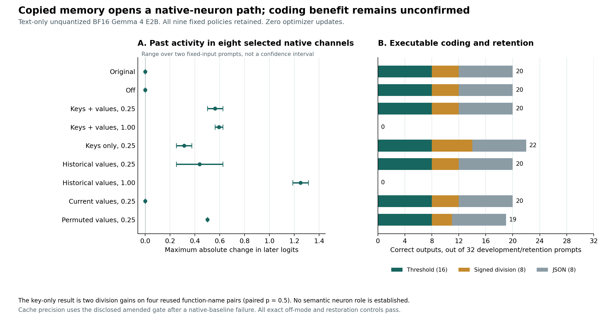
Q15 / N05: native semantic-anchor roles and executable functions
Can a small native neuron group at an instruction anchor transmit a rounding policy and causally change correct function behavior without training?
complete host audited no specific role or gain · Parents: Q12, Q14
Question provenance
Proposed after the complete N03 and N04 audits. N03 missed dominant alternatives and selected late units. N04 opens their historical path but does not establish a semantic role.
Method
Use forward activity at the same punctuation token in six crossed policy strata to select 32 native channels in layers 0 through 13, with nested eight-channel diagnostics and two strict matched random groups. Test 13 fixed policies on 24 new complete-function and retention prompts, plus 24 descriptive discovery outputs. No fitted vectors, measurement gradients or optimizer updates.
Result
All 336 outputs, 48 self/rescue rows, 26 restorations and exact identity controls passed the host audit. The baseline scored 1/16 rounding functions, 4/4 filters and 0/4 strict JSON. Every nonidentity condition scored 0/16, 4/4 and 0/4. Selected and matched random interventions caused the same single loss. No role or gain was established.
Interpretation
Nine baseline rounding outputs hit the ceiling and fourteen failed the source/execution gate. Baseline JSON values were correct inside forbidden outer fences; this posthoc content diagnostic leaves the strict grades unchanged. Activity contrast did not establish policy transmission. The missing full-vector anchor control and poor baseline prevent a broad conclusion about native neuron function.
Next question
Can a counterbalanced selector task produce reliable executable expressions, and can full native state transplantation at the selector actually change policy before sparse localization?
Direction decision
Broaden and require a prospective baseline-usability gate plus full-state positive controls. Do not repeat or enlarge the sparse punctuation-anchor sweep. Preserve source/format/cap limitations and every null.
Q16 / N06: baseline usability and causal-site gate
Can a usable counterbalanced mode selector control executable expressions, and is its information causally accessible through full MLP or reused attention-memory states?
complete host audited joint MLP causal site · Parents: Q12, Q14, Q15
Question provenance
Proposed after N05 complete audit and structure diagnosis. It replaces an inadequate full-function assay and adds the missing full-state positive control.
Method
Counterbalanced red/blue integer-filter expressions. Gate usable baseline first, then joint full native MLP or reuse-only K/V donor replacements. Same-policy mapping reversal controls label meaning. No sparse localization yet.
Result
All 200 outputs and guards passed. Baseline filtering was correct on 16/16 and JSON on 4/4. Joint early-MLP opposite donors transferred all sixteen programs to the opposite policy. Reversed-mapping same-policy donors preserved fourteen of sixteen. Keys, values and joint K/V produced no functional flips. No outputs hit the cap.
Interpretation
Joint early MLP opposite donors transfer16/16;reversed-mapping same-policy donors preserve14/16. K/V donors produce no functional flips. All JSON4/4 and no caps. This locates a conditional site, not individual neuron meanings or coding improvement. Four crossed instruction strata with nuisance-name replications, not sixteen algorithms.
Next question
Which individual layers carry the joint early-MLP effect, and where is native-channel localization justified?
Direction decision
Deepen at the measured MLP site. Decompose every early layer with both donor controls before a sparse search. Opposite-policy transfer is control, not coding improvement.
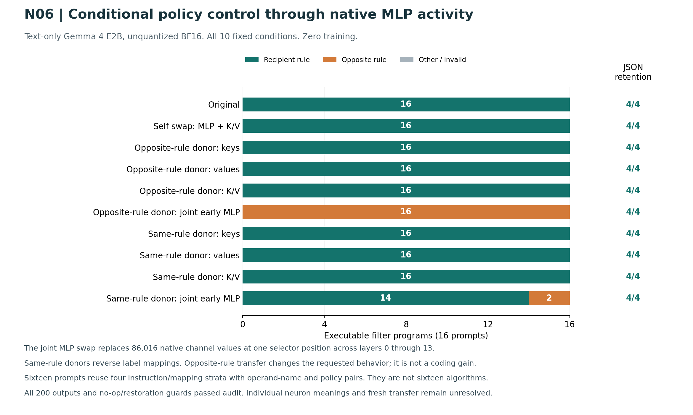
Q17 / N07: individual-layer decomposition of the native MLP site
Which of the fourteen early native MLP layers is sufficient for policy transfer beyond a reversed-mapping same-policy donor control?
complete host audited no eligible individual layer · Parents: Q16
Question provenance
Proposed after the complete N06 all-condition audit. The joint early-MLP site transfers every tested opposite policy while keys and values do not.
Method
All fourteen individual layers, opposite and same-policy actual donors, exact carried original predictions, live original replay, per-layer self hashes and exact restoration. No sparse selection or optimization.
Result
All 600 records passed audit, including twenty carried originals, 280 self hashes, twenty identity generations and sixty restorations. Layer 0 switched all sixteen filter programs under both opposite-rule and same-rule donors. Layers 4 and 9 each switched two prompts under opposite donors only, in a single direction/mapping stratum. Other individual-layer donor conditions preserved all sixteen. All JSON controls passed, with no caps.
Interpretation
The layer 0 effect fails the reversed-label same-policy control. No individual layer meets the fixed eligibility criterion. This supports conditional label dependence at the tested whole-layer site, not an abstract-rule neuron or coding improvement.
Next question
Can later-layer blocks specifically rescue a fixed label-corruption background using same-rule donor states?
Direction decision
Follow the prospective branch for no eligible layer: fixed block decomposition and counterfactual rescue. Do not choose layer 0 as an abstract semantic site or rank sparse units blindly.
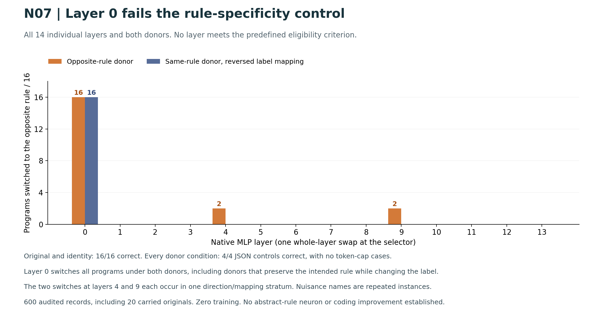
Q18 / N08: fixed-block decomposition and conditional rescue
Do later native MLP blocks provide rule-specific rescue after a fixed layer 0 label corruption?
complete host audited B05 09 eligible · Parents: Q16, Q17
Question provenance
Proposed after the complete N07 audit under its predeclared no-eligible-layer branch. Joint early-layer swaps transfer policies, but layer 0 alone follows the label even under a same-rule donor.
Method
Six fixed contiguous blocks in layers 1 through 13. Clean opposite/same-rule swaps and a common layer 0 label-corruption background with opposite, same-rule and recipient donors. Sixty existing reference records are carried without completion regeneration.
Result
All 660 records passed audit, including sixty carried references, 240 block-self hashes, twenty corrupted identities and sixty-six restorations. Three blocks met the frozen gate. The size/start rule selects layers 5–9: same-rule donors restore 14/16, opposite-rule donors 0/16, recipient donors 16/16 and clean same-rule donors preserve 16/16. All JSON controls pass, with no caps.
Interpretation
A controlled conditional block-rescue effect survives same-selector-token donor controls. It is a whole-block result on reused development prompts. It does not establish necessity, sparse neuron meanings, fresh transfer or improvement of the unmodified model.
Next question
Can a small native group within the selected block account for rule-specific rescue beyond strong random controls on new development prompts?
Direction decision
Deepen in the prospectively chosen five-layer block. Freeze discovery scoring and controls before code; use new development prompts and retain fresh confirmation.
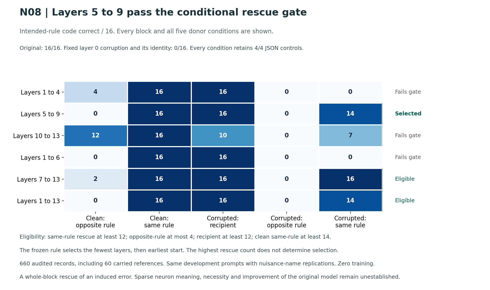
Q19 / N09: sparse native groups and new-development necessity/rescue
Can small native groups in layers 5–9 support controlled rule-specific rescue beyond matched random groups on new prompts?
complete planned discovery gate stop host audited · Parents: Q18
Question provenance
Proposed after the complete N08 audit. The fixed size/start criterion selected B05_09 from three eligible blocks.
Method
Discovery-only full-program influence ranking from old verified self-generated code; strict activity/write/context-delta matching;64/256native groups; new-development full-site gate; selected/random necessity, amplification and conditional rescue; matched top-eight individual diagnostics. Zero training.
Result
All 32 activation-gradient measurements, 384 reference-token targets and four exact ordinary/instrumented logit comparisons passed. Native weights stayed frozen, with no parameter gradients. There are 4,622 positive candidates. The highest-ranked coordinate has twelve eligible controls, below the fixed sixteen. The planned stop produced zero new code outputs.
Interpretation
No sparse coding effect was measured. Strict matching exposed a rare high-ranked coordinate; the result does not establish a semantic role or a null causal effect.
Next question
Can a separately frozen matchability-limited native group be tested without weakening the control ratios or pool minimum?
Direction decision
Close N09, preserve failure and reuse compact discovery measurements only. Select from control feasibility before any unused development outputs; do not rerun32backwards.
Q20 / N10: matchable native-neuron necessity/rescue
Within the controlled block, does a strictly matchable native group show necessity and rescue beyond both random controls?
complete planned retention gate stop host audited · Parents: Q18, Q19
Question provenance
Prospective continuation after N09 planned discovery stop; unused development outputs remain unseen.
Method
Reuse saved discovery measurements. Bounded deterministic exclusion of control-infeasible selected candidates; all ratio limits, pool minimum, seeds, downstream conditions anddecision rules unchanged. Replay native captures before new outputs.
Result
All 168 full-site records passed the frozen audit. The original filter baseline is 16/16; corruption 0/16; same-rule full rescue 12/16; opposite 0/16; recipient 16/16. Arithmetic is 4/4 throughout. JSON is 0/4 throughout because the model returns objects instead of the requested strings. The planned retention gate stopped before any sparse intervention.
Interpretation
The controlled block effect transfers to changed development wording. The retention baseline is unusable for that requested output shape. This is not edit-induced retention damage and no individual-neuron effect was tested.
Next question
With one separately frozen clarification of JSON output wording, do the unchanged sparse controls show necessity and rescue?
Direction decision
Preserve every original grade. Carry all 140 unchanged code/arithmetic records exactly; generate only new JSON gate completions and the previously unexecuted sparse panels.
Q21 / N11: native-neuron necessity with clarified retention wording
After clarifying the requested JSON output shape, do the fixed native groups show controlled necessity and rescue?
complete host audited primary criterion failed · Parents: Q18, Q19, Q20
Question provenance
Prospective wording-only continuation after N10 stopped at its retention gate. Sparse outcomes were unseen when the protocol was frozen.
Method
Keep all selected/control groups, filter/arithmetic prompts, grading, conditions and criteria fixed. Change only four JSON instruction suffixes to previously usable wording. Carry 140 unchanged completions exactly and verify their live logits. Maximum 1,012 new outputs.
Result
All 1,152 records audited: 1,012 new and 140 exact carried. The selected 256-neuron group restores two corrupted programs and causes four losses when cut from full rescue, versus zero for both random groups. The primary four-rescue threshold and direction/mapping coverage fail. All 48 individual conditions match their respective baselines and random controls. Every main condition retains 4/4 JSON and 4/4 arithmetic; no caps.
Interpretation
A limited conditional group effect, not a passing functional-role candidate. The cut measures dependence within an engineered full-rescue context. Clean zero/double gains do not improve original-model correctness. Individual meaning, useful benefit and novelty remain unestablished.
Next question
Does the originally highest-ranked rare coordinate show a reproducible, context-specific effect under within-unit controls and direct weight edits?
Direction decision
Close this predefined matchable-group test. Preserve all failures and do not promote secondary outcomes. A rare-unit study needs its own prospective scope and cannot claim unavailable matched between-unit specificity.
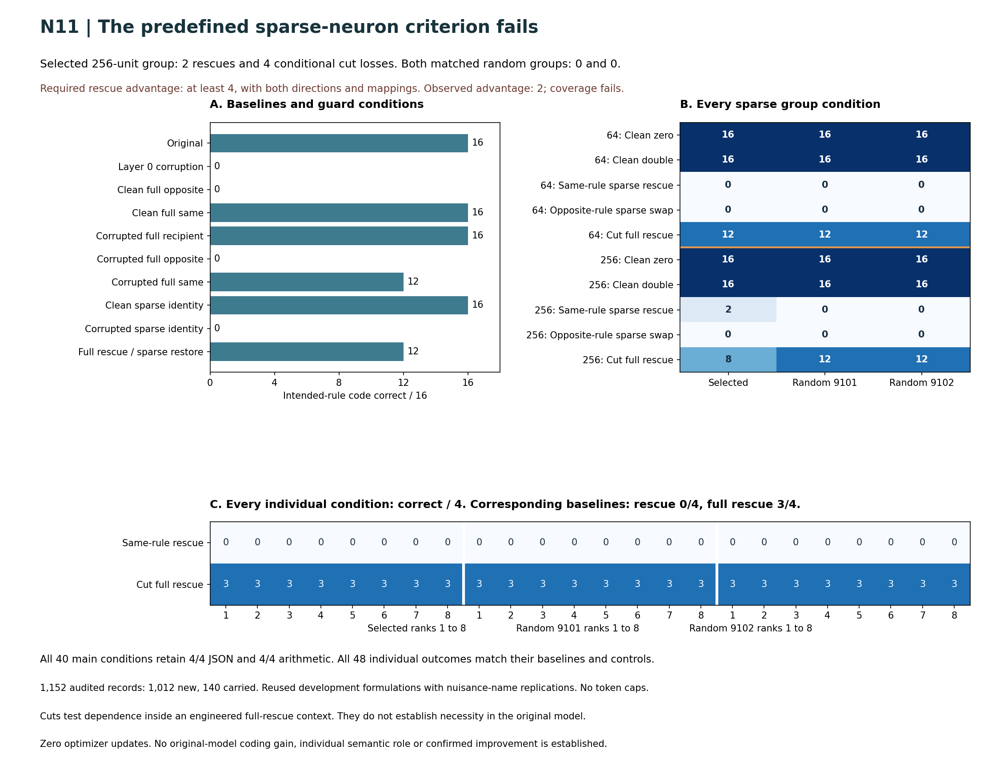
Q22 / N12: rare native unit and permanent connection edits
Does the originally highest-ranked rare native neuron carry a context-specific rule signal, and do prescribed permanent edits improve fresh development code?
complete host audited planned baseline stop · Parents: Q19, Q21
Question provenance
Prospective separate estimand after N11 failed primary. The original highest-ranked rare coordinate and this alternative route predate N11 output access.
Method
One fixed native neuron, actual within-unit counterfactual values and balanced shuffled donors; anchor and global gains; prescribed outgoing-column assignments. Four coding families and eight unchanged retention inputs were planned.
Result
All 40 baseline records were audited: 32 new and eight exact carried originals. Filtering and predicates each scored 8/8. Extremum and rounding each scored 0/8. All eight retention cases passed. The validity and per-family guards stopped the run before any edit.
Interpretation
This is a planned baseline stop, not an intervention null. No neuron or weight edit was executed. The original code and output-format failures remain unchanged.
Next question
With unchanged prompts and grades, does the neuron affect the two usable rule tasks, and do prescribed edits improve any of the four coding families?
Direction decision
No further wording repairs. Carry all forty originals exactly. Declare the narrower role cohort before interventions and retain every family for coding gains and losses.
Q23 / N13: fixed native unit on usable rule domains and all coding outcomes
Within the two usable rule domains, does the fixed neuron carry a controlled rule signal, and do prescribed connection edits improve coding?
complete host audited no role or coding gain · Parents: Q22
Question provenance
Prospective narrower scope after N12 baseline-only stop. No neuron-intervention outcomes available. Development baseline selection explicitly acknowledged.
Method
Carry all forty N12 originals exactly. Keep all sixteen conditions, prompts, graders and strengths. Use the sixteen filtering and predicate cases for the role question, and all thirty-two coding cases for gains and losses. Verify live baseline and native-capture hashes before edits.
Result
All 640 records were audited: 600 new and forty exact carried originals. Every condition has the same correctness. Opposite donors switch none of the sixteen usable rule programs. All permanent edits execute and restore correctly. Stored-column and global activity factors zero and two agree exactly across eighty comparisons.
Interpretation
The recorded activity tracks the rule, but this native scalar is insufficient to transfer it under the fixed donor swaps. Zeroing or doubling it gives no coding gain or loss on this panel. Logit and some raw-text changes do not establish a useful function.
Next question
Does a whole native site support contextual-rule transfer on these unchanged prefixes before further sparse localization?
Direction decision
Close the rare-unit test without new strengths or coordinate reselection. Validate a full-site positive control in the broader semantic context before claiming a localization failure or constructing new neurons.
Q24 / N12P: recorded prefix activity contrasts
Does the fixed rare neuron track the requested relation or the selector label in its recorded prefix activity?
posthoc host analysis complete no new forwards · Parents: Q22
Question provenance
Posthoc description of N12 captures, completed before N13 intervention-output access. Does not change N13 conditions or thresholds.
Method
Exactly decompose each four-cell label-by-definition mapping table into its mean, label effect, mapping effect and rule interaction. No fitted vector, model update or new forward call. Check identical selector-state hashes across four later task domains.
Result
The rule interaction accounts for 95.05% and 99.11% of centered four-cell activity energy in the two instruction wordings. Every later task domain has the same selector value and full native MLP hash for a fixed prefix.
Interpretation
A bounded descriptive association with the contextual comparison rule. The selector precedes task text, so this site cannot distinguish those later domains. No individual semantic function, necessity or coding benefit follows from activity alone.
Next question
Do actual counterfactual and prescribed connection interventions produce rule-specific executable changes?
Direction decision
Keep N13 unchanged and await its complete frozen causal panel. Do not reselect the coordinate or promote this posthoc association to a confirmed role.
Q25 / N14: full-site semantic positive control
Can a whole native site transfer the contextual rule in the unchanged coding tasks?
complete host audited block5 9 eligible · Parents: Q23, Q24
Question provenance
Prospective scope check after the complete N13 null. No N14 implementation or outputs existed when its protocol was frozen.
Method
Keep every prompt, grade and base completion. Compare actual opposite-rule and reversed-label same-rule donors at layer 0, layers 5 to 9 and layers 0 to 13. Use exact self, identity and restoration guards.
Result
All 400 records audited, including forty carried originals. Layers 5 to 9 transfer the opposite rule in 14/16 usable programs and preserve all 16 under reversed-label same-rule donors. All eight retention cases pass. Layer 0 transfers under both donor types and fails the control; layers 0 to 13 preserve only 13/16 under same-rule donors and fail the threshold.
Interpretation
The declared block passes whole-site conditional sufficiency across two coding families. This does not identify individual neuron meanings or a useful model edit. The complete grid includes one incidental development coding gain, which is not confirmed. A posthoc syntax check finds thirteen of the sixteen block-opposite outputs differ only by a strict comparison polarity after fence and bound-variable normalization. Same-rule donors preserve thirteen raw strings, two normalized syntax trees and one equivalent Boolean formulation. This describes saved programs and does not establish a neuron meaning or change the frozen gate. The six incidental condition-level gains concern only two existing extremum cases, both requesting the higher value; they are not six independent replications.
Next question
Which individual layer or adjacent pair within the validated block can pass the same semantic controls?
Direction decision
Follow the frozen positive-site branch. Use a new prospective forward layer/pair grid, retain every control and carry the necessary full-site originals exactly. No re-ranking from a single secondary gain.
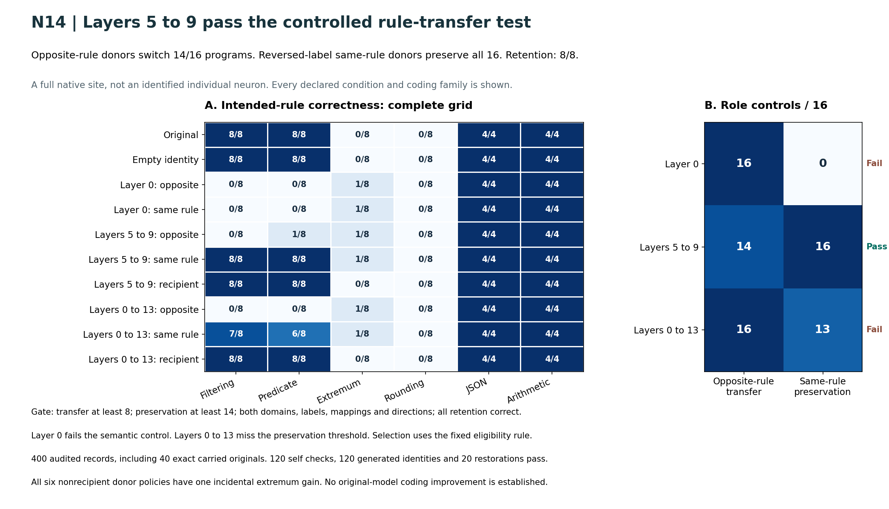
Q26 / Prospective position and construction review
Which next intervention would resolve a functional uncertainty rather than repeat a sparse null?
host literature and design review complete no model calls · Parents: Q25
Question provenance
Conditional proposals recorded while N14 is active and before its output access. Not a frozen GPU experiment.
Method
Compare forward site decomposition, current-readout controls and prescribed neuron-source connections against exact closest priors and the no-training constraint. Require source/position/cache and gain-equivalent controls before construction.
Result
Reviewed primary abstracts and selected methods show direct precedents for activation steering, generated-token steering, shared/local history and internal-state augmentation. No new model call, learned vector or GPU launch occurred.
Interpretation
A new causal route alone is not a useful new capability. Candidate construction still lacks the native functional evidence required by its trigger.
Next question
Which branch of the frozen N14 decision rule is supported by its complete audited grid?
Direction decision
Keep N14 unchanged. Use its outcome to select the already stated site-or-anchor branch. Do not start a construction sweep merely because an activity signal is large.
Q27 / N15: semantic layer and adjacent-pair decomposition
Which single layer or adjacent pair inside the validated native block can transfer the contextual rule while preserving same-rule behavior?
complete host audited no eligible layer or pair · Parents: Q25, Q26
Question provenance
Prospective positive-site branch after N14 complete audit. No N15 code or pretrained outputs exist at protocol freeze.
Method
All five single layers and four adjacent pairs inside layers 5 to 9 receive actual opposite and reversed-label same-rule donors. Keep all forty inputs and grades. Carry two hundred necessary parent-control records exactly, with live logit replays.
Result
All 920 records audited, with 720 new outputs and 200 exact carried parent records. Single-layer transfers are 0, 0, 0, 0 and 4 of 16. Adjacent-pair transfers are 0, 0, 3 and 6. Every same-rule condition preserves all sixteen programs; all eight retention cases pass throughout. No candidate meets the predefined gate.
Interpretation
The whole-block result has not localized to any tested single layer or adjacent pair. Partial transfers do not establish an individual neuron role or coding improvement. This supports testing the missing combinations; it does not prove a formal high-order interaction.
Next question
Which remaining layer subset inside the validated block can pass the unchanged semantic gate?
Direction decision
Follow the frozen no-eligible-site branch. Test all remaining combinations once, keep all parent conditions, and use fewest layers then fixed lexical order rather than highest score.
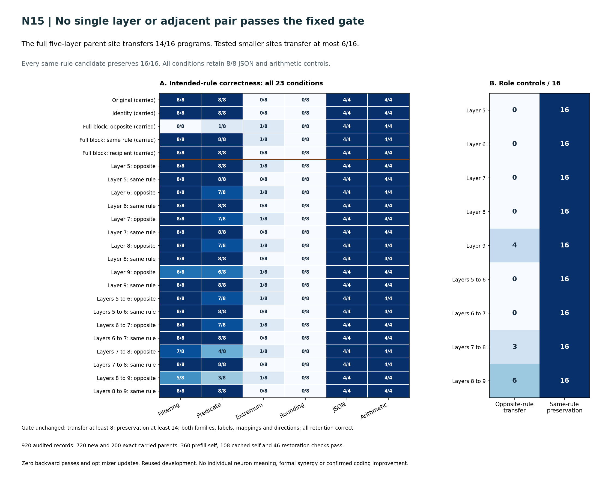
Q28 / N16: remaining native layer subsets
Which remaining native layer subset inside layers 5 to 9 passes the unchanged semantic donor controls?
complete host audited proper three layer site selected · Parents: Q25, Q27
Question provenance
Prospective no-eligible-site branch after all N15 outputs and guards pass. No N16 implementation or outputs exist at protocol freeze.
Method
Test the six nonadjacent pairs, all ten triples and all five four-layer subsets. Preserve all forty inputs and grades, actual opposite/same-rule donors and the fixed role gate. Carry 200 necessary common parent records exactly.
Result
All 1,880 records were audited, including 1,680 new outputs and 200 exact carried parents. Across all 31 nonempty subsets, no singleton or pair passes the gate. Five triples pass. The prescribed smallest-cardinality and lexicographic selection is layers 5, 6 and 9: opposite-rule transfer in 8/16 cases, same-rule preservation in 16/16 and all eight retention controls correct. Every guard passes, with zero backward passes and updates.
Interpretation
Conditional rule transfer is localized to a three-layer site on reused development prompts. This is sufficiency under donor interventions, not individual neuron meaning, formal synergy, necessity or original-model improvement. A later posthoc reading found matching filter/predicate outcomes in every prefix cell. The selected site transfers lower-mode requests in wording 0 and higher-mode requests in wording 1; it fails the opposite direction in each wording. Balanced marginal counts do not establish complete rule invariance.
Next question
Which native channels inside layers5,6,9 carry the controlled donor effect?
Direction decision
Keep every one of the 31 subset outcomes. Queue prospective channel partitions, necessity/rescue and matched random controls after the requested behavior pilots. Do not select a higher-scoring triple.

Q29 / B01: conversational behavior alongside coding
Do prescribed native-neuron edits change conversational behavior, and do those changes coincide with coding degradation?
complete private host audited blinded assessment closed · Parents: Q23, Q28
Question provenance
Direct human suggestion to chat with edited Gemma, supported by a screenshot offered as an unverified lead. No chat outputs exist when this panel and assessment rubric are prepared.
Method
Twelve fixed first prompts and four followups compare baseline, identity and whole-conversation zero/double edits of the fixed rare unit and two same-layer random controls. Natural histories and fixed baseline histories separate dialogue feedback from the current edit. Four unchanged coding probes measure retention.
Result
All 192 records pass raw-token, carry, scope, identity, counter and restoration audits. There are 158 new predictions, 16 exact closed-parent carries and 18 within-run reuses. All 160 chat records were rated before unblinding, using 55 exact-content groups. Edits change wording but every condition scores 4/4 coding; bounded false-premise, uncertainty and name-memory checks all pass. Twelve or thirteen of twenty chat records per condition are capped.
Interpretation
No clear personality shift or coding improvement is established. Qualitative scores are exploratory observer judgments, not an independent validated trait instrument. Random controls also change wording and are not activity matched. The high cap rate limits conclusions.
Next question
Does the separately frozen reversal grid alter coding or conversation under normal and reversed text?
Direction decision
Close B01. Preserve every reply, all conditions and blinded ratings. Proceed with the fixed small reversal pilot; do not reroll or select a dramatic quote.
Q30 / B02: neuron and text reversal controls
What changes under precisely defined native-neuron reversals and normal/reversed user text, when every answer is read both ways?
complete private host audited all readings closed · Parents: Q29, Q10
Question provenance
Direct human proposal; mathematical definitions recorded before implementation or model results.
Method
Four fixed model operations by normal or reversed user code points, using eight unchanged prompts. Both answer readings are retained. The planned 64 records contain 56 new generations and eight exact B01 base carries, giving 128 derived readings. Host algebra, scope and restoration checks pass.
Result
All 64 records pass, with 56 new predictions, eight exact carried originals and 128 derived readings. All 64 chat readings were rated before unblinding. Original and aligned reversal score 4/4 coding on normal prompts. Every other model/input/reading cell scores 0/4. Unmatched reversal and sign inversion produce unusable chat in this panel. All 48 restorations and parameter guards pass; zero backward passes and updates.
Interpretation
Coordinated reversal preserves ideal algebra but is not numerically bit-identical: all sixteen first-logit hashes differ, while first tokens agree. It changes one normal-input reply and six reversed-input replies, without changing coding correctness. Unmatched reversal and sign inversion do not create a semantic inverse; reversing the displayed answer does not restore the tested behavior. This is a small capped development panel.
Next question
Can native channels in the selected three-layer site support specific causal function and useful coding edits?
Direction decision
Close B02 and retain every model/input/reading cell plus the startup failure. No new reversal strengths or prompt edits from these outcomes. Return to Q31 native-channel coverage, necessity, rescue and matched controls.
Q31 / N17: matched native-channel necessity and transfer
Which small native post-gating groups within the already validated layers 5, 6 and 9 site causally mediate the conditional rule transfer, and do prescribed edits improve clean coding?
complete private host audited all primary gates failed closed · Parents: Q28, Q29, Q30
Question provenance
The prescribed next branch follows the complete N16 subset audit. It returns to the native-neuron goal after the requested behavior pilots.
Method
Forward-only activity contrasts select 96 native post-gating coordinates in layers 5, 6 and 9. Two fixed random groups match activation RMS, outgoing-column norm and paired donor-change RMS. Fixed actual-donor swaps, clean gains 0 and 2, exact rescue and conditional transfer cuts separate the causal questions. Nine individual-unit sentinels are also tested. There are zero optimizer updates.
Result
All 1,002 records pass, including 708 new predictions, 120 parent carries and 174 baseline-reference rescues. Selected and both random groups produce zero opposite-rule transfers, zero clean-role losses and zero conditional-transfer losses. Same-rule preservation is 16/16 for all. All nine individual-unit sentinel arms match their controls. Retention passes throughout.
Interpretation
All three primary causal criteria fail. Six condition-level incidental gains concern the same extremum instance, also improved by a random amplification arm and the inherited full donor. There is no confirmed coding improvement or individual semantic function. A prospective arithmetic erratum corrected fixed call overhead from 646 to 546 before output access; every original record remains preserved.
Next question
Can a fixed broader native-channel partition locate the inherited full-vector donor effect before further sparse ranking?
Direction decision
Close N17 without new strengths, re-ranking or reruns. Broaden to prescribed native-channel coverage while preserving all matched nulls and the wording-by-direction limits of the parent site.
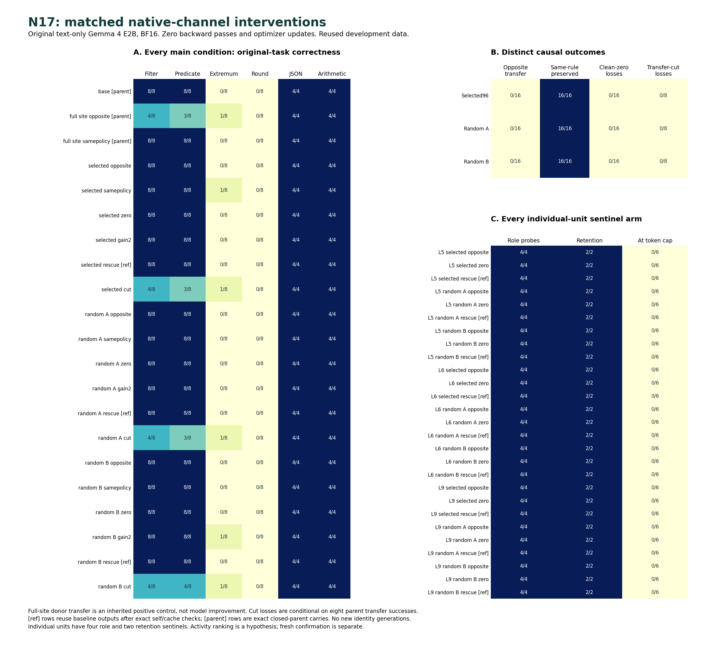
Q32 / N18: task-informed position and native-channel coverage
Does moving observation and intervention after the coding task strengthen causal policy control, and can a prescribed broader channel partition locate that effect?
planned full site gate stop private host audited closed · Parents: Q28, Q31
Question provenance
N17 null and its pre-result interpretation options require broadening beyond a prefix that has not read the task.
Method
Use the same forty inputs at the final prompt position. Require a controlled full-site donor gate first, then compare all four magnitude-stratified native-channel quarters with same-rule donors, clean gains, exact rescue and conditional cuts. Zero training.
Result
All 160 records pass: 80 new outputs, 40 exact original carries and 40 baseline references. Opposite full-site end-position donors transfer 0/16; same-policy preserves 16/16, and all eight retention cases remain correct. Forty self-logit checks, twelve paired cached hashes and eight restorations pass. Quarter selection and intervention never run.
Interpretation
This is the predeclared full-site gate stop. It does not establish that the neurons have no function. The final prompt position and the comparison decision during code generation are different computational contexts.
Next question
Can an actual native code-decision state provide a controlled causal observation site without supplying the divergent answer token?
Direction decision
Keep N18 closed. Validate native-prefix alignment and exact current-step intervention feasibility on the host before freezing another study. Do not expand N18 layers, weaken its gate or run its quarter stage.
Q33 / N19: current code-decision neuron feasibility
Can native neurons at the actual generated comparison decision support controlled function, rather than activity at an earlier prompt position?
complete private host audited full site passed fixed unit primary failed closed · Parents: Q31, Q32
Question provenance
N18 planned full-site stop motivates checking a later computation where the model actually chooses a comparator.
Method
Edit exactly one cached code-decision forward after a native prefix shared across three contexts. Compare fixed neuron L9C4632 and existing controls 850/6085 under actual donor swaps, clean gains 0 and 2, and rescue. Full 35-layer current-state controls and eight activation-gradient measurements are predeclared. No profile selects an intervention. There are 19 conditions and 399 records; retention donor cells are non-applicable references.
Result
All 399 records pass audit: 230 new tails, 21 exact parent carries, 84 guarded references and 64 non-applicable donor references. Full current-state opposite donors transfer 13/13 programs; same-rule preserves 13/13. The fixed target and both existing controls each have zero transfers and zero clean losses. All clean-gain/rescue retention controls pass. Every native replay, scope, self-cache, measurement and restoration guard passes.
Interpretation
The actual code-decision site supports controlled donor transfer. It does not establish an individual neuron function, abstract comparison meaning, a deployable trigger or original-model improvement. The rare-unit primary criterion fails. Retention donor references are not successful new donor tests. Two host auditor repairs preserve the original code and failures; grades and scientific thresholds do not change.
Next question
Can a strictly matched small native group reproduce and causally support the validated current-decision effect?
Direction decision
Keep N19 closed. Freeze N20 selection, matched controls, native necessity/rescue, donor sufficiency, conditional cuts and all outcomes before new work. No retuning of N19 units or strengths.
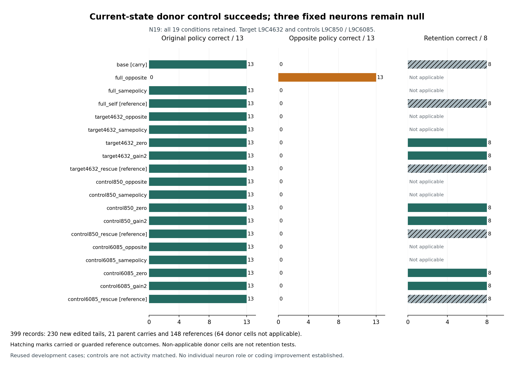
Q34 / N20: strict current-decision native-group localization
Can a small strictly matched native group reproduce and support the validated code-decision effect?
complete private host audited primary failed closed · Parents: Q33
Question provenance
N19 full-state current-token donors transfer 13/13 programs, while three fixed neurons remain null. The new group is selected from archived discovery measurements before any N20 coding outcome.
Method
Rank the saved minimum influence across four mapping/label strata, then accept the first 64 strictly matchable positive units. Two fixed random groups match native layer, activity RMS, donor-change RMS and outgoing norm. Nested 16-unit doses remain descriptive. Six groups receive opposite/same-rule swaps, clean gains of zero and two, exact rescue and conditional cuts. Forty conditions contain 840 records, including 486 new tails and 84 exact parent carries.
Result
All 840 records pass the frozen audit: 486 new tails, 84 exact parent carries, 126 guarded references and 144 non-applicable references. Selected64, both matched random64 groups and every nested16 group each produce zero opposite-rule transfers, zero clean-zero role losses and zero conditional-transfer losses. Same-rule preservation is13/13; both clean0/2 retention arms are8/8. All805native state hashes,126native self checks,78conditional self checks,80restorations and exact late-cache/scope/parameter guards pass. Actual0backwards/optimizer updates,6122forwards,72706input exposures and2192new tokens.
Interpretation
The primary native-group role screen fails. These small groups have no measured functional advantage over their matched controls in the reused correct-baseline assay. Full-state transfer remains13/13. The null neither establishes universal redundancy nor rules out effects at other positions,larger groups or genuinely different tasks.
Next question
Can the already fixed global prescribed connection edit improve fresh complete-function coding? If not,broaden causal coverage at a validated decision site instead of repeating tiny gradient-ranked sweeps.
Direction decision
Close N20 permanently. Preserve all40conditions and all nulls. Do not select a nested dose,new strength or new coordinates from these outcomes. The N21 fresh utility design and task/oracle/source freezes predate N20 output access. A future utility result cannot retroactively make the failed N20 role test pass.
Q35 / N21: global prescribed connections and fresh coding utility
Can a fixed global connection edit help fresh coding without a known-answer position, and what does normalization change?
complete private host audited closed no selected gain baseline unassessable · Parents: Q33, Q34
Question provenance
N19 supplies current-code control but no useful sparse edit. N21 was proposed and its initial utility specifications were frozen before N20 outputs were read. N20 has since failed its small-group role screen. Post-MLP RMS normalization qualifies how the planned global gains must be interpreted.
Method
Keep the fixed selected group of 64 neurons and both random groups of 64. The prospective utility design fixes 24 complete functions across eight families, eight retention inputs and five conditions: original, same-scope identity, and a global stored factor of two on each group. There is no answer-position trigger, fitted strength or outcome-selected coordinate. Hidden executable oracles are separate from the 32 prompt-only records. Global column assignments have separate FP32 and BF16 random-Gemma scope fixtures.
Result
All 160 new records pass the frozen host audit. Original and identity score 12/24 coding functions; the selected group at factor two also scores 12/24 with zero gains or losses. Both random groups of 64 score 14/24, improving the same two instances. Every condition scores 4/4 Python and 2/4 strict JSON retention under the frozen checks. The ten baseline source-format failures exceed the predeclared limit of eight, so the planned benefit interpretation is unassessable. All source-format failures coincide with caps and single unclosed fences. Original grades remain unchanged. All 32 generated identities, 160 first-prefill cache witnesses, 10 restorations, 188 original-column restores and declared parameter/hook guards pass. Actual zero backwards and optimizer updates, 27263 forwards, 56453 input-token exposures and 27093 generated tokens. Worker duration is 2203.11 seconds; notebook duration is 2247.20 seconds, not charged quota. The five recipes and exact BF16 original/doubled columns are saved as a compact model bundle.
Interpretation
No selected-group utility gain is measured, and the baseline format gate prevents the planned benefit interpretation. Random-arm gains remain controls, not selected winners or independent confirmations. All primary-correct responses pass the separate stress inputs. The selected edit changes all 32 initial logit hashes and 15 raw responses, but not correctness. Global weight-scope feasibility is established on this checkpoint, without individual neuron meaning or useful capability. A pre-output review records that rotation retention tests values, not fresh-list identity. Retention claims stay within those frozen checks.
Next question
Close this utility panel without a cap extension, new wording, dose or winner selection. Proceed to the independently frozen Q36 stage-by-site control before another sparse rank.
Direction decision
N21 is closed. Preserve every arm, format failure and fixed grade. Deepen the native stage/coverage question; no routine independent GPU reconstruction or rerun of this panel.
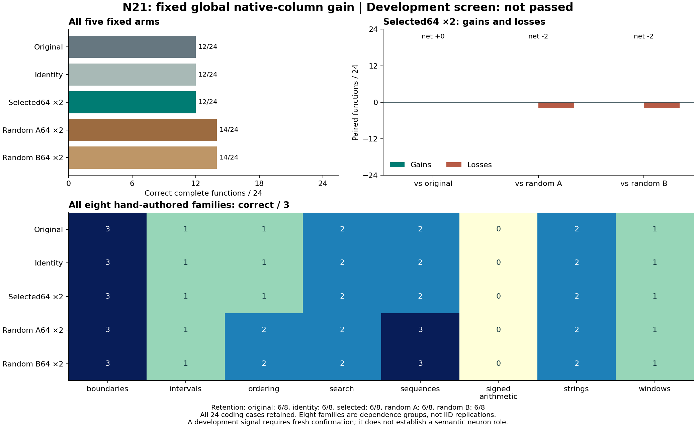
Q36 / N22: separate intervention stage from native-site coverage
On identical inherited cases, does the difference between N18 and N19 depend on intervention stage, layer coverage or both?
complete private host audited closed · Parents: Q32, Q33, Q35
Question provenance
N18 changes three layers at the final input token; N19 changes all 35 at a later generated-code decision. Their comparison cannot isolate stage. A source review verifies the same 13-case cohort. The new protocol was frozen before N21 output access. N21 has since closed without a selected utility gain.
Method
The frozen two-by-two control retains both closed cells and measures only all 35 native MLPs at last input and layers 5, 6, 9 at the current comparator. All 13 inherited role cases and eight retention references remain fixed. Actual unmodified donors are applied during one target forward, then hooks are removed. No weights, gradients or fitted strengths change.
Result
All 273 records pass: 52 new generations, 147 exact parent carries, 42 guarded self references and 32 non-applicable donor references. On the same thirteen role cases, both the three-layer and all-35-layer last-input sites transfer 0/13. The three-layer current site also transfers 0/13; only the inherited all-35-layer current site transfers 13/13. Same-rule donors preserve 13/13 in every cell. All 46 native sources, 94 live parent guards, 42 new self checks, 16 paired cache trajectories and 26 restorations pass. Actual zero backwards and optimizer updates, 1, 168 forwards, 22, 918 input-token exposures and 332 new tokens. Worker duration is 231.32 seconds; notebook duration is 272.70 seconds, not charged quota. Posthoc structure review finds that 12 of 13 broad-current changes are single strict-operator substitutions and 12 of 13 exactly match opposite-donor tokens. No grade or model rerun occurs.
Interpretation
Neither missing cell passes. Within this bounded grid, the broad 35-layer intervention and current generated-code context coincide with successful transfer. This does not prove formal interaction, native necessity, individual neuron meanings or an accuracy gain. The cohort does not independently counterbalance semantic relation and emitted comparator identity. N/A retention references remain explicit.
Next question
Before another sparse ranking, design a task counterbalance that separates intended comparison direction from the written comparator token by reversing operand order. Preserve every closed outcome and freeze any new task/eligibility rules before model access.
Direction decision
Close N22. Follow its no-eligible-missing-cell branch by reconsidering task adequacy. Q37/N23 now runs only an original task gate; a later donor-control study still requires a separate freeze.
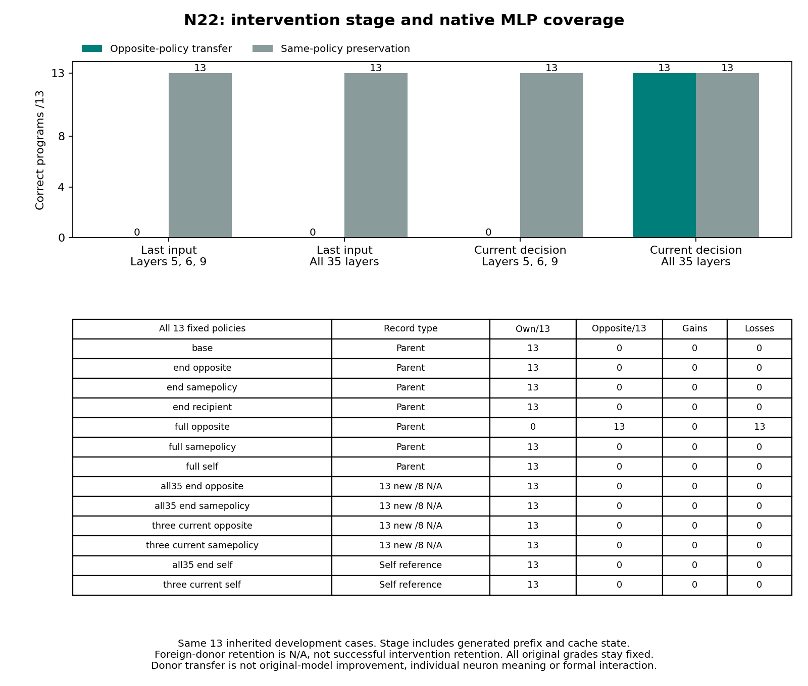
Q37 / N23: comparison meaning versus operator spelling
Does broad current-site donor control carry the requested comparison relation, or mainly a local operator-token state?
complete private host audited task gate failed closed · Parents: Q33, Q34, Q35, Q36
Question provenance
Neither N22 missing cell transfers. The all 35/current parent effect mostly changes one strict operator token; semantic direction and written spelling remain confounded. The prospective branch calls for task reconsideration before another larger search.
Method
The separately frozen first stage measures original behavior only. Thirty-two fresh comparison expressions cross two families, two wordings, two Amber/Teal mappings, two selected labels and two written operand orders; eight fresh retention cases remain separate. Operand order is part of the primary grade. A complete eight-case block qualifies only when all denotation, type, orientation and comparator-token gates pass. At least three of four blocks and all eight retention cases must pass before any separate causal study is frozen.
Result
All forty original records and mandatory guards pass audit. Role requirements pass 16/32: 8/16 filters and 8/16 predicates. Each eight-case block passes only four, so zero complete blocks qualify. Retention passes 5/8: JSON 4/4 and arithmetic 1/4. Two outputs reach the cap. No neuron edit ran. Actual zero backwards or optimizer updates, 697 forwards, 8,827 input-token exposures and 655 new tokens; worker 152.97 seconds and notebook 195.60 seconds, not charged quota.
Interpretation
The frozen task-usability gate failed. Diagnostic denotation passes 28/32, but twelve of those violate required operand order and remain primary failures. There is no donor or neuron result. All raw outcomes, original grades and failed gates remain private and unchanged.
Next question
Review whether already fixed small groups have measurable continuous causal effects despite zero program flips. Inspect existing saved metrics before proposing any new measurement. Do not rewrite N23 or treat a continuous effect as semantic meaning or useful coding improvement.
Direction decision
Close this attempted semantic/lexical counterbalance without edits, prompt changes, cap extension or rerun. Reconsider the scientific assay before another sparse ranking.
Q38 / N24: finite causal decision-score effects
How large and direction-specific are the finite decision-score effects of the fixed native groups that caused zero program flips?
complete private host audited bounded score effect closed · Parents: Q33, Q34, Q35, Q36, Q37
Question provenance
N20 saves current logit hashes and argmax tokens, not the two operator logits or full-vocabulary changes. The archived score is a gradient hypothesis for a continuous margin, not a prediction of program flips.
Method
Reuse all six N20 groups, original recipients, actual donor states and existing four operations: opposite, same-policy, zero and conditional cut. No new strengths, coordinates, tasks, ranking, fitted values or continuation generation. Compare exact finite margins to the already saved stratum-averaged first-order estimates only on the identical eight discovery cases.
Result
All 578 trajectories and mandatory guards pass. Selected64 opposite donors shift the operator margin by mean +1.57358, positive on all thirteen reused cases, versus matched random means +0.02502 and -0.05078. The selected shift exceeds each random shift on every case. Same-policy donors average +0.02194. Native zeroing shifts +0.73077; conditional cuts reduce the full-opposite margin by +0.78636, positive on all thirteen. Nested16 opposite shift averages +0.55379; every group and operation remains reported. The selected64 actual margin remains negative on all thirteen, so the original zero program flips remain unchanged. Actual zero backwards/updates, 3,330 forwards, 48,228 input-token exposures and zero generated tokens. Worker 728.52 seconds and notebook 765.09 seconds, not charged quota. All 525 native h hashes, current-state, self, conditional-self, cache, restoration, parameter and source/transport guards pass.
Interpretation
Controlled finite causal contribution to comparator-token scores on reused development, with clear separation from same-policy and matched-random controls. This is insufficient for the prior program-level necessity/sufficiency screen. The selected64 finite means approximately agree with archived first-order estimates on the same eight discovery cases. Semantic versus lexical interpretation remains unresolved; no individual neuron meaning, deployable trigger, coding improvement or novelty. Full-state ratios are descriptive, not mediation. Other-five means are unbalanced second-wording development, not fresh confirmation.
Next question
Review a separately frozen answer-independent runtime syntax trigger for the already prescribed gain of two and fixed groups on new error-bearing complete functions. Do not assume that reinforcing a chosen operator improves correctness. Keep the global-edit null and every old grade unchanged.
Direction decision
Deepen the bounded score-contribution evidence while testing usefulness separately. No new coordinate, strength, rank or fitted trigger. No N24 rerun.
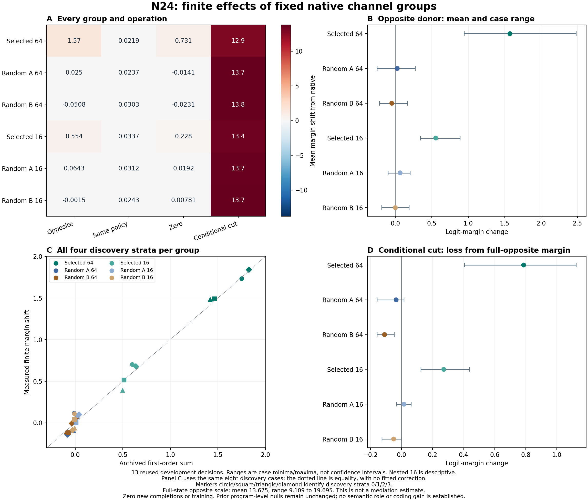
Q39 / N25: answer-independent runtime coding controller
Can a fixed runtime syntax trigger make the existing native gain-of-two edit useful for complete coding without a baseline answer or known comparator position?
complete private host audited closed usable baseline utility null · Parents: Q34, Q35, Q36, Q37, Q38
Question provenance
N24 shows selected64 causal comparator-score shifts well above both matched controls, but every parent program still stays unchanged. N21 global gain two has no selected coding gain and an unassessable format gate. The old current decision uses an original response-derived prefix, so it is not a deployable controller. N23 semantic/lexical counterbalance failed and remains closed.
Method
Keep exactly selected64 and both already fixed random64 groups and the already prescribed factor two. Compare original, same-scope identity, selected gain two and both random gain-two policies. No new coordinate, rank, strength, fitted vector or dose search. A fixed Python-prefix recognizer may apply the activation gain only before syntactic decision opportunities during the model's own free generation. The recognizer may inspect only tokens already generated in that same response. It may parse generated parameter/iterator bindings and identify a trailing bound name after return or if. It must not use task IDs, expected programs, hidden oracles, correct comparator tokens, baseline completions, future tokens or a learned activation classifier. Its grammar, exact boundary rules and event cap must be frozen and host-tested before model outcomes. The two-stage protocol first generates forty unmodified responses. Only an audited usable, error-bearing baseline with fixed trigger coverage and all eight retention checks permits the four remaining arms. Otherwise stop before edits. Both stages and their auditor are frozen before original outputs.
Result
N25H passes all 58 fixed random-Gemma cases, with 708 tiny forwards, 816 input-token exposures, 578 random-model tokens and zero pretrained forwards, backwards or updates. The original zero-forward Python 3.14 parser failure and compatibility-only repair remain preserved. Forty prompt/token/oracle checks and the prospective auditor fixtures pass. Both stages and all 63 source/parent hashes were frozen before original outputs. Stage A is closed after all forty originals and mandatory guards pass: 23/32 coding, 8/8 retention, 28 source-valid coding outputs and five source-valid errors across three families. All prospective usability requirements pass. It records 2571 forwards, 6326 input-token exposures and 2517 new tokens, with zero backwards or updates; worker 266.19 seconds and notebook 315.85 seconds. Stage B is complete, private, host-audited and closed. All 200 records pass, including 160 new responses and forty exact original carries. Every condition scores 23/32 coding and 8/8 retention, with zero gains or losses and identical family outcomes. The fixed utility criterion fails. All 160 new token sequences equal their originals. Each gain arm changes exactly 54 immediate full-logit hashes and preserves every unedited step hash and whole current cache. All forty identity generations, forty native first-prefill parent measurements, 160 restorations, unchanged-parameter and hook guards pass. Stage B records 10484 forwards, 44279 input-token exposures, 10068 new tokens and zero backwards or updates; worker 886.12 seconds and notebook 930.13 seconds. Durations are not charged quota. No GPU job remains active.
Interpretation
The fixed runtime controller fails to improve coding on a usable error-bearing baseline. N24's bounded score contribution remains valid. Numerical changes at trigger steps never alter emitted tokens in N25. Under exact current-cache equality, unchanged emitted tokens leave no persistent changed historical state. This is a tested controller null, not proof that the groups have no function. The 54 baseline events include nineteen comparator extensions, nineteen whitespace extensions, five EOS and eleven other extensions; this description and the thirteen inactive-case predictions were recorded before B output access. No task, strength, coordinate, trigger or grade was changed. Eight algorithm families contain dependent variants. No individual semantic meaning, useful coding gain, new capability or novelty is established. A later generic executor probe identifies an untested returned-list identity requirement in two coding families. The frozen scores and original null are preserved.
Next question
Q40 now records the separately frozen global suppression follow-up on the unchanged usable cohort. It keeps all original cases and grades, the selected group and both matched controls. Do not regenerate originals or infer that suppressing a model contribution detects errors.
Direction decision
Close the syntax-gated gain-two controller. Keep its complete null. Consider a bounded global intervention only with a separate prospective primary criterion, exact identity/restoration controls and fresh confirmation if a development signal appears. No new ranking, fitted gain or task rewrite.

Q40 / N26: fixed global native-channel suppression
Does global suppression of the fixed native group affect executable coding more than both matched controls on the unchanged usable N25 cohort?
complete private host audited closed both primary screens failed · Parents: Q34, Q35, Q38, Q39
Question provenance
N24 shows a bounded finite score contribution. N25 closes with numerical trigger effects and zero token or coding changes. Earlier global gain2 had an unusable format gate. A global suppression test removes the trigger timing limit without selecting new neurons or tasks.
Method
Keep the exact forty N25 prompts and grades, selected64 and both fixed random64 groups. Assign global stored outgoing-column factors zero and two, with zero primary and two secondary. Carry forty originals, measure forty guarded factor-one references and generate 240 new responses. Never regenerate original completions. No new coordinate, fitted gain, trigger or task wording. Require all source, scope, cache, identity, restoration and counter guards.
Result
N26 is complete, private, host-audited and closed. All 320 records pass: 240 new responses, forty exact original carries and forty identity references guarded by every-step measurement replay. Suppression scores are original 23/32, selected 25/32, random A 25/32 and random B 24/32. Selected and random A gain the same two prompt instances with zero losses. Amplification scores are selected 22/32, random A 23/32 and random B 22/32; selected has zero gains and one loss. Every condition retains 8/8. Both predetermined primary screens fail. All forty native prefills, 2517 identity step hashes, 240 edited first-prefill cache witnesses, 280 restorations and seven exact weight contexts pass. Only declared target version increments occur; all other versions and gradient flags are unchanged, all gradients empty and all hooks restored. Actual zero backwards or optimizer updates, 18568 forwards, 97423 input-token exposures and 15160 new tokens. Worker duration is 1629.24592 seconds; notebook duration is 1671.13699 seconds, not charged quota. Source, server privacy and input manifest match the freeze. No GPU job remains active. All eight recipes reference the existing exact column bundle without new tensors or a full base copy. The preceding preparation record retains 53 random-Gemma host cases, eight auditor fixtures, 62 corruption refusals and the preserved fixture/path/account-guard repairs.
Interpretation
No selection-specific coding advantage or clean-loss role passes the fixed criteria. Six condition-level gain slots concern only two unique scalar-return instances; selected suppression and random A share the same two gains. Three loss slots concern two unique instances. All eight dependent families and every strength remain reported. Correctness changes are in clamp/step scalar families, so the returned-list identity limit does not explain them. The frozen checker still leaves that property untested in two other families, and no grade is changed. A future-only checker now tests fresh top-level return identity in a bounded child, with thirteen generic fixtures; it is not used for this study. N24 continuous score evidence remains valid, while semantic neuron meanings and confirmed coding benefit remain unestablished.
Next question
Close this fixed global sparse-group hypothesis. Review a bounded contextual-rule-binding test across recipient operand orders at an earlier validated policy site, with a prospective task-adequacy gate before any new ranking. The current review is intent only; no next GPU protocol or dataset exists yet.
Direction decision
Do not select a winning dose, coordinate, task wording or secondary arm. Keep every observed gain and loss. The next question should separate contextual rule control from literal operator transfer before more sparse localization or construction.

Q41 / N27: contextual policy transfer across operand order
Can the previously controlled early policy site transfer a contextual comparison rule across recipient operand order, without copying a later donor operator?
complete private host audited planned baseline stop closed · Parents: Q25, Q37, Q38, Q40
Question provenance
N26 fails both fixed global screens; selected suppression and random A share the same two gained cases. N23 fails reverse-order task adequacy before edits. N14 supplies a controlled earlier full-site result, but the operand-order generalization question remains open. N24 score contributions do not establish abstract rule meaning.
Method
The prospective two-stage protocol fixes 32 conditional function completions crossing family, wording, mapping, label and operand order, plus eight actual retention tests. A mechanical assistant prefix fixes the first operand without its comparator. Stage A requires three complete eight-case blocks and all eight retention cases before edits. Stage B carries forty originals and generates 160 identity, opposite, same-policy and exact rescue completions. The native site is post-gating layers 5 through 9 at the selected-label token before task text. Primary transfer requires both orders in at least half the eligible pairs with full family, style, mapping, label and direction coverage, same-policy preservation on at least N minus two cases and actual 8/8 retention in both foreign arms.
Result
All forty original records and mandatory guards pass. Coding is 21/32 and retention 8/8, with no caps. All role outputs satisfy the strict source and operand-order checks; eleven compute the wrong relation. Complete-block scores are 4/8, 7/8, 5/8 and 5/8, so none qualifies. The frozen gate stops before every neuron edit and Stage B never launches. Forty native captures save two hundred layer hashes; both restorations, complete cache, parameter, hook and independent counter guards pass. Actual zero backwards or updates, 192 forwards, 9632 input-token exposures and 150 new tokens. Worker duration is 180.39021 seconds and notebook duration 231.15543 seconds, not charged quota. An initial host audit import failed before main or any grading because the shell selected the isolated Kaggle Python. The unchanged frozen auditor passes under the validated research Python; both invocations and the dated environment correction are preserved.
Interpretation
The controlled completion format fixes source order, but the combined contextual-label task remains inadequate for the predeclared role test. No causal intervention result follows. Saved-grade analysis gives 14/16 canonical and 7/16 reversed-order correctness; this is descriptive and does not relax the stop. N23 used different inputs and cannot establish an isolated format or position effect. No wording, cap, score or selection rule changes.
Next question
Q42 considers a different directly specified relation assay, without arbitrary contextual labels. It would separate semantic transfer from donor-operator copying at the previously controlled current site. It is intent only, not a rewritten N27 panel or a launched study.
Direction decision
Close N27 at its frozen baseline stop. Keep all forty original outputs and every failure. No donor tests, sparse ranking, partial-cell cohort or task repair follow.
Q42 / N28: direct relation versus donor-operator transfer
Does full current-site donor transfer follow an explicit comparison relation across operand order, or copy the donor operator?
complete private host audited closed primary failed · Parents: Q36, Q38, Q41
Question provenance
N27 fails its complete counterbalance before edits despite every source/order check passing. N22 has current-site donor control on aligned inherited programs; N24 has bounded sparse comparator-score effects. Those effects remain tied to operator spelling. The next question removes arbitrary label binding and explicitly crosses donor order with relation.
Method
The frozen two-stage protocol uses sixteen direct-relation completions crossing two families, two wordings, two directions and both recipient operand orders, plus eight retention cases. All sixteen role cases and all eight retention cases must pass before edits. At all thirty-five native MLPs on the last input token, four actual donor policies cross relation and written donor order under a paired alternative wording. Identity, ordered rescue and actual same-task retention donors remain fixed. Stage B would carry twenty-four originals and generate 144 new responses, giving 168 records. Six of eight complete recipient-order pairs must transfer under both opposite-donor orders; both same-relation arms must preserve at least 14/16 and all retention must pass. No fitting, ranking, gradients or weight edits.
Result
Stage A passes all sixteen role programs and eight retention cases. Stage B audits all 168 records: 144 new responses and twenty-four exact original carries. Zero complete cross-order pairs qualify, against the frozen six-of-eight requirement. Same-order opposite donors transfer 16/16 programs and same-relation donors preserve 16/16. Both reversed-order arms have zero source-valid role programs; all eight retention cases pass in every condition. All 840 native hashes, twenty-four live parent logits/caches, twenty-four self and twenty-four rescue measures, six live cached-self sentinels, forty-eight exact identity/rescue generations and fourteen restorations pass. Stage B records 794 forwards, 33101 input-token exposures, 528 new tokens and zero backwards or optimizer updates. Worker duration is 465.76865 seconds and notebook duration 519.28416 seconds, not charged quota. All sixty-four foreign role suffixes match their actual donor token sequences in saved-output posthoc comparison. Invalid cross-order programs retain failed grades. The original kernel alias and metadata correction remain preserved.
Interpretation
The all-layer last-input donor site does not pass relation transfer across written operand order. No complete pair qualifies. Raw suffix equality is a lexical observation,not a repaired semantic score. Same-order donor control does not establish order-invariant relation information. Both retention-donor repeats and family variants are dependent. No individual meaning,native necessity or coding improvement is established.
Next question
Do not perform sparse semantic ranking from this failed full-site primary. The pre-output next-site review proposes a separate whole-site control before the assistant code prefix on the same adequate inputs. Any follow-up needs its own prospective freeze and unchanged exact original carries.
Direction decision
Close this current-site semantic hypothesis. Do not select a stronger dose,new rank or surviving cell. A pre-code instruction-state control is a distinct question and must be frozen before implementation.

Q43 / N29: instruction state before code spelling
Can a native instruction state before the code prefix transfer the requested relation across later written operand order?
complete private host audited closed primary failed · Parents: Q42
Question provenance
The next-site review was recorded before N28 donor output access. N28 now closes with zero qualifying cross-order pairs and all sixty-four foreign suffixes token-exact to their actual donors. A source before the assistant code prefix cannot already see its first operand. Keep the adequate inputs and distinguish conditional instruction control from literal continuation transfer.
Method
Reuse all twenty-four N28 inputs, prefixes, original outputs and graders. At the last user-content token before model markers and code, patch actual native MLP layers 0 through 13 from opposite or same-relation other-wording donors. Exact common-prefix source equality across later recipient orders is mandatory. Five conditions give 120 records: twenty-four exact carries and 96 new responses. There are no duplicate donor-order arms, new rankings, strengths, weights, gradients or fitting.
Result
All 120 records and mandatory guards pass: 96 new and 24 exact carries. Opposite donors transfer 0/16 programs and 0/8 complete pairs. Every condition retains 16/16 original correctness and 8/8 retention, with no caps, gains or losses. Both foreign arms change all 24 first-logit and whole-cache hashes; every generated token sequence remains identical to its original. All 336 native hashes, 112 across-order equalities, 24 parent replays, 24 self and 24 rescue first checks, six paired cached sentinels, 48 exact identity/rescue generations and ten restorations pass. Actual counts are 566 forwards, 24497 input-token exposures, 352 new tokens and zero backwards or updates. Worker duration is 323.699 seconds; notebook duration is 366.937 seconds, not charged quota.
Interpretation
The before-code full native MLP site fails the prospective relation-transfer criterion on this unchanged development panel. Both foreign arms change all24 first-logit and whole-cache witnesses, while every new generated token sequence remains exact to its original. This is a functional null despite an executed numerical intervention.
Next question
Close this panel anchor search. Do not change position, layers, wording, thresholds, dose or regenerate originals. A different mechanism requires a separate intent and protocol.
Direction decision
Close the before-code site and this panel anchor search. Broaden only through a separately justified mechanism, without sparse semantic ranking from this failed full-site gate.
Q44 / N30: one fixed native unit and finite output bias
Does the first previously fixed native channel have a specific finite comparator-score contribution, and can direct ablation/rescue distinguish it from matched controls?
complete private host audited primary failed closed · Parents: Q38, Q43
Question provenance
N24 finite group effects are positive; N26 utility and N28/N29 semantic controls are negative. The first original N20 unit is fixed before individual finite outcomes, and a duplicate matched-control draw is identified before protocol implementation.
Method
Three fixed individual channels at native layer 34: target 3271, retained strict control 9170 and newly prescribed distinct strict control 4059. Keep all thirteen inherited role cases and eight retention cases. Four parent conditions and fifteen individual policies give 399 records: 180 new tails, 84 exact carries, 63 guarded rescues and 72 new non-applicable donor-retention references. The 84 carries also contain sixteen inherited N/A donor-retention cells. Direct finite-score effects and actual program outcomes remain separate. Every comparison, source, counter and stopping rule is frozen before GPU inference.
Result
All 399 records and mandatory guards pass. The predefined finite-bias primary fails one of 27 components: the conditional-cut effect in discovery mapping 0, label 0 ties control B at 0.015625. The other 26 components pass, without replacing the conjunction. Target mean effects across all 13 cases are 0.0558894231 for opposite donors, 0.0348557692 for zeroing and 0.0291466346 for conditional cuts; both controls are smaller in these aggregates. All three units show 0/13 opposite-program transfers, zero clean ablation losses and zero conditional-transfer losses. All three new zero-arm retention sets pass 8/8, with no caps or coding gains. N31 remains unexecuted because its prospectively fixed prerequisite fails.
Interpretation
A small measured native-unit score contribution on reused development. The complete specificity criterion fails. No individual semantic role, native program necessity, coding gain or novelty is established.
Next question
Do not advance down the unit rank, lower the criterion, rerun this panel or launch conditional N31. Review a separate mechanistic question before any new GPU protocol.
Direction decision
Close the fixed-unit screen without lowering its conjunction or advancing the rank. Preserve the measured finite effects and all functional nulls.
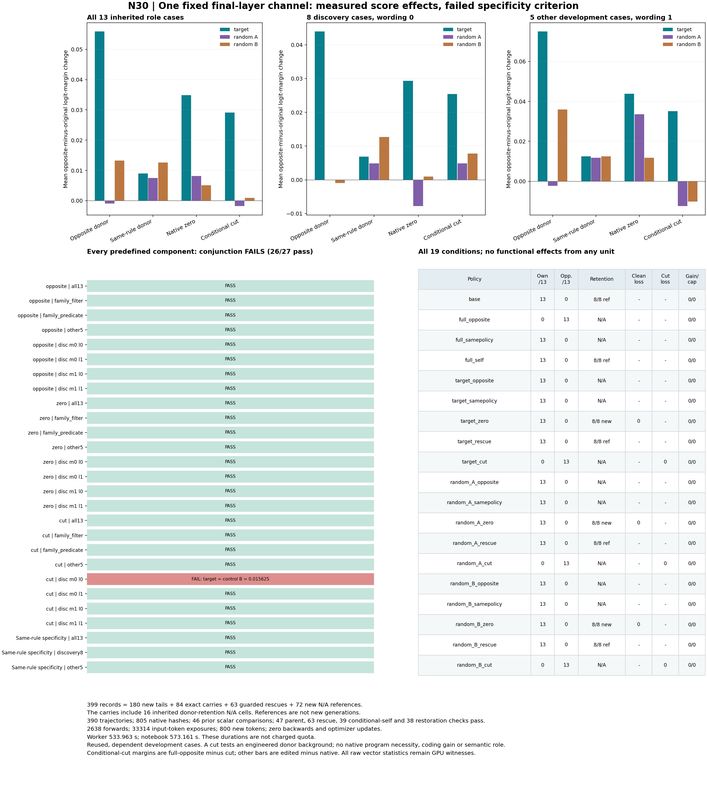
Q45 / N31: conditional fresh complete coding
If the fixed unit passes its finite-bias criterion, do prescribed permanent edits help fresh complete coding?
unexecuted prerequisite failed · Parents: Q44
Question provenance
Recorded before N30 model outputs were accessed. Candidate coordinates, global factors zero and two, all eight conditions and eight proposed task families precede utility outcomes.
Method
Conditional original BF16 complete-function study with prescribed column factors zero and two for the target and both strict controls, plus original and identity. The plan specifies 64 coding and 16 retention inputs, independent hidden oracles and strict return and input contracts. No dataset or GPU protocol exists.
Result
N30 fails the prospectively required finite-bias conjunction. No N31 dataset, baseline, edit or model run is executed. Original intent remains preserved.
Interpretation
A finite output bias is not coding benefit. Fresh utility must keep all cases, strengths, controls and family dependence. No best-dose selection.
Next question
No N31 execution under this intent. Review a separate mechanism before any future experiment.
Direction decision
Apply the pre-output stopping rule. Do not bypass it with a renamed utility test or relaxed parent criterion.
Q46 / N32: fresh group score and comparator binding
Does the fixed group score effect generalize to fresh coding contexts, and does it follow the requested relation or the donor comparator token?
closed planned original only baseline stop · Parents: Q38, Q42, Q44
Question provenance
N24 finds a controlled group score effect on reused development. N28 shows a token-copy confound for whole-site transfer. N30 fails its individual-unit conjunction, and the conditional N31 utility test remains unexecuted. This separate group question tests new counterbalanced inputs without reranking or a new gain.
Method
Keep the exact selected 64 channels and both original matched random groups. New complete functions cross relation and operand order, with independent source and execution contracts. Freeze all three phases before baseline access: 40 original cases, a full-site control, then all fixed sparse donor, zero and rescue arms. Full grid: 960 records, at most 712 new continuation records: 40 complete originals and 672 edited tails across the three phases. No old completion is regenerated.
Result
N32 closes at its predefined original-only baseline gate. All forty raw outputs and mandatory audit guards pass, but role correctness is 19/32 and retention 8/8, with no caps. Predicate is 14/16 and filter 5/16. Six sources fail declared list/loop names, four fail operand order, and three source-valid programs are wrong. Ten of sixteen prefix pairs and two of eight complete blocks qualify. No block is selected. B/C are never built, and no neuron intervention runs. All grades remain final. Actual work is 1065 forwards, 5104 input-token exposures, 1065 generated tokens, zero backwards or optimizer updates, 190.320466596 worker seconds and 244.782451849 notebook seconds. Durations do not measure charged quota. The original version stops before inference on a metadata-schema mismatch: zero forwards or predictions, 87.330323114 worker seconds and 141.034697889 notebook seconds. The exact metadata-only supplement, direct/shared encoder checks and path-only versioned auditor repair remain preserved. All 25 inference sources and the original 109 hashes are unchanged; the versioned freeze contains 143 hashes. Earlier host preparation retains all 125 oracle/source/execution outcomes, tokenizer-only continuation, random Gemma path and read-only magnitude fixtures, the preserved host dtype failure and targeted unfinished-case continuation, corrupted-receipt refusals and timestamp erratum. Their complete counters and sources remain linked and in the append-only ledger.
Interpretation
The complete-function counterbalance is unusable under its frozen source and prefix contracts. No N32 group intervention, semantic-versus-token classification, native necessity or coding benefit was tested. This planned task-adequacy stop does not refute the earlier local group score contribution, and does not show that neurons lack function. All familiar concepts and nuisance variants remain dependent.
Next question
Keep N32 closed. Review a separate scaffolded conditional-completion mechanism assay as development design informed by this failure. Do not alter N32 prompts, grades, caps or use only its two complete blocks.
Direction decision
Apply the stop without wording or grade repair. A separately frozen conditional-completion pilot may reduce construction requirements, but its format is selected after this feedback and must be labelled development, with whole-vocabulary baselines, full-site controls and new-input magnitude checks before sparse interpretation.
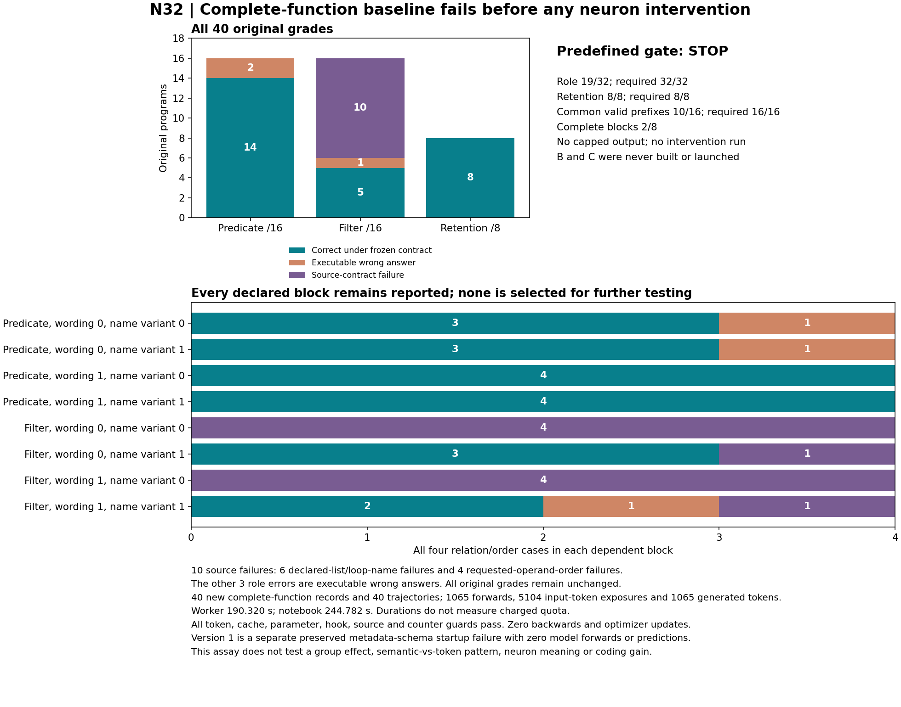
Q47 / N33: predefined scaffolded comparison position
At a predefined incomplete-code input position, does the fixed group follow the requested relation or the donor comparator token?
closed planned original only baseline stop · Parents: Q38, Q42, Q46
Question provenance
N24 supplies bounded group-score evidence on reused generated prefixes. N28 exposes literal donor-suffix copying. N32 fails its complete-function source and prefix gate before edits. A new scaffolded format asks a narrower question at an input position fixed before any answer. Its format is selected after that feedback, so this is development design rather than fresh confirmation.
Method
Keep the same selected 64 channels and both fixed controls. New comparison/filter tasks cross relation and operand order with dependent wordings/names. Supply unfinished syntax ending before the comparator, never the comparator answer. Whole-vocabulary greedy tails receive independent executable assembled-program grades. Original-only and full-site gates precede sparse tests. New-input native/donor-change RMS adequacy uses strict fixed bands, without rematching or applied scaling. Preserve all fifteen primary components, both finite-pattern conjunctions and a separate executable-binding gate. A same-token and byte-exact-cache continuation may be represented only as a guarded reference under deterministic parameter, buffer, configuration and hook checks.
Result
N33 closes at its planned original-only gate. All 40 records and every audit guard pass, but role correctness is 28/32: predicate 12/16 and filter 16/16. Retention is 3/8, with one output at the 48-token cap. All 32 role sources are valid. Four predicate cases request the larger relation with reversed operands and emit the opposite comparator. Five retention programs are wrong. Required operator-only first tokens pass 28/32. All supplied scaffolds and token alternatives pass. The inherited common-prefix schema boolean is false because of the four first-token failures, not unequal scaffolds. Four of eight complete role blocks qualify, and none is selected. B and C are never built, and no neuron edit runs. All grades stay final. Actual work is 344 forwards, 4512 input exposures and 344 new conditional tokens, with zero backwards or optimizer updates. Worker time is 128.410698811 seconds and notebook time is 199.621957749 seconds. These are not charged quota. The frozen 81 source hashes, host failures, targeted unfinished-case repairs and exact private server source remain preserved.
Interpretation
The supplied-scaffold interface fails its frozen baseline and first-token gate before neuron interventions. No group-score replication, semantic-versus-token classification, native necessity or coding benefit was tested. Passing filters are not selected as a new cohort. Familiar concepts and wording variants remain dependent.
Next question
Keep N33 closed without prompt, scaffold, cap or grade repair. Review the earlier N28 full-site donor-copy result for a distinct mechanism question using all of its existing cases.
Direction decision
Stop this assay as frozen. A later proposal must state a separate scientific endpoint and preserve the failed semantic and utility prerequisites of prior studies.
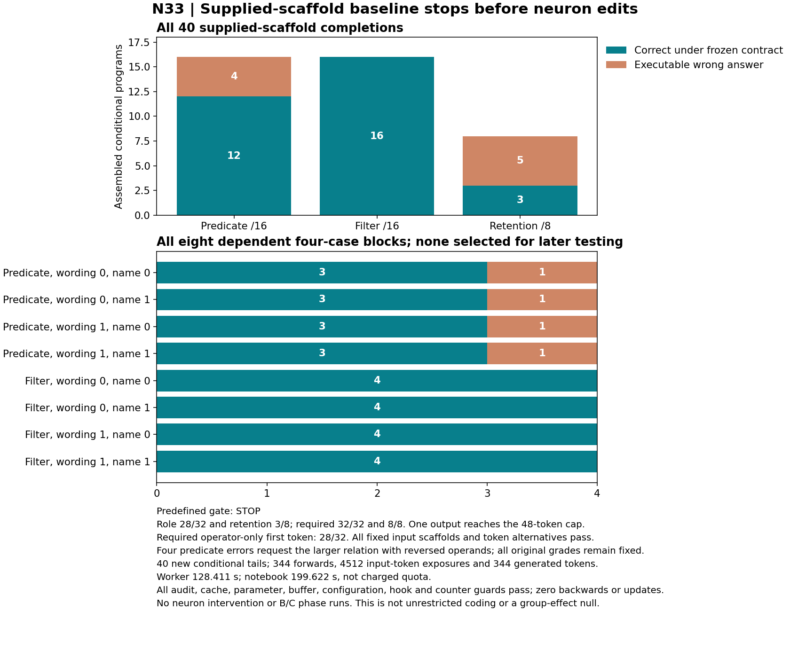
Q48 / N34: anatomical localization of donor comparator copying
Which native MLP blocks control the observed donor comparator-token copying, and does zeroing those sites disrupt original correct conditional programs?
complete private host audited closed · Parents: Q42, Q38, Q47
Question provenance
N28 has a usable closed conditional panel and an observed full-site copying failure. Its semantic criterion remains failed. N32 and N33 stop before edits on separate baseline gates. This proposal studies where the copying occurs, using the complete older panel rather than selecting passing new cases.
Method
Seven fixed contiguous five-layer MLP blocks cover all 35 native layers. Each receives all four original donor relation/order policies, native zeroing and ordered recipient rescue. All 24 N28 cases remain. The 49-condition grid contains 1176 records: 168 exact parent carries, 840 actual edited tails and 168 guarded rescues. The original 32-token, newline and EOS contract stays fixed. Native token-only teacher lineage is measurement, never an edited prompt or continuation cache. All parent logits, 840 native h hashes, self/rescue and restoration paths must pass. No new task wording, score rank, fitted strength, gradient or weight update.
Result
All 1176 records and mandatory guards pass: 840 actual new tails, 168 exact parent carries and 168 guarded rescues. No new tail reaches its output limit. No block passes the complete primary criterion. Blocks 20 to 24 and 25 to 29 pass both copying and token-preservation controls and the coding zero-loss criterion, but zeroing retains only 1/8 and 4/8 retention cases. Early blocks are strongly operand-order dependent. All 840 native h hashes, 144 live parent currents, 168 self checks, 168 rescue checks and 294 restorations pass. Actual work is 3988 forwards, 139984 input exposures, 3126 new tokens and zero backwards or optimizer updates. Worker time is 855.723 seconds and notebook time 907.505 seconds, not charged quota.
Interpretation
The complete primary fails. Large native blocks can affect conditional copying and correct code, but the late blocks also support other tested behavior. This does not identify a selective coding module, an individual neuron role or useful improvement. Reused dependent cases and coarse ablation limit specificity.
Next question
Close this fixed block screen without expanding its universe or lowering thresholds. Continue adequate-output native inference, then token-aligned observation before choosing new surgery.
Direction decision
Broaden from another baseline redesign to the mechanism of an already observed copying failure. Do not revive a failed semantic or utility prerequisite.
Q49 / N35: donor neuron transplantation feasibility
Does the structurally compatible full donor show a coding advantage under the recipient interface before a separately gated neuron transplant?
complete private host audited adequacy failed closed · Parents: Q09, Q10, Q13, Q48
Question provenance
The human asks whether a constructed neuron group or layers borrowed from another model could improve coding. Earlier silent additions and physical edits establish limited engineering gates, while no useful coding gain exists. This new proposal tests pre-existing donor knowledge through direct copying, with zero training.
Method
A protocol frozen before task implementation fixes 32 complete Python functions across eight algorithm families and 16 arithmetic/JSON retention questions. Both unmodified text-only BF16 models receive identical recipient-tokenizer inputs and manual full-vocabulary greedy decoding. Independent host-only executable oracles, all outputs and gains/losses remain fixed. No parameter assignment, backward or optimizer update.
Result
All 96 records and mandatory source/state/cache/argmax/counter guards pass. Original coding is 19/32 and donor coding is 23/32, with five gains and one loss across two families. Original coding has ten caps; donor coding has none. Retention is 7/16 original and 11/16 donor. All donor-quality clauses pass, but original retention fails the fixed 12/16 minimum, so the N36 prerequisite fails. All grades remain final. The unique assay uses 7895 forwards, 16985 input exposures and 7895 generated tokens, with zero backwards, optimizer updates or parameter assignments. Forty-eight original responses are carried exactly after the preserved metadata stop; none is regenerated.
Interpretation
Structural compatibility does not establish shared feature meanings or useful coding transfer. Copying an already-trained donor is a permitted direct-edit hypothesis, not training performed here. Whole transformer insertion remains unvalidated and is more involved than adding an MLP branch.
Next question
N36 remains unexecuted under its failed prerequisite. Keep all strengths, tasks, criteria and source-design records unchanged. Return to the already frozen N34 copying-localization question, Q48, for implementation.
Direction decision
The donor has a bounded descriptive coding advantage, but the full prespecified prerequisite fails. Do not replace that conjunction with attractive clauses or select a new retention cohort. Continue the queued native-site question.
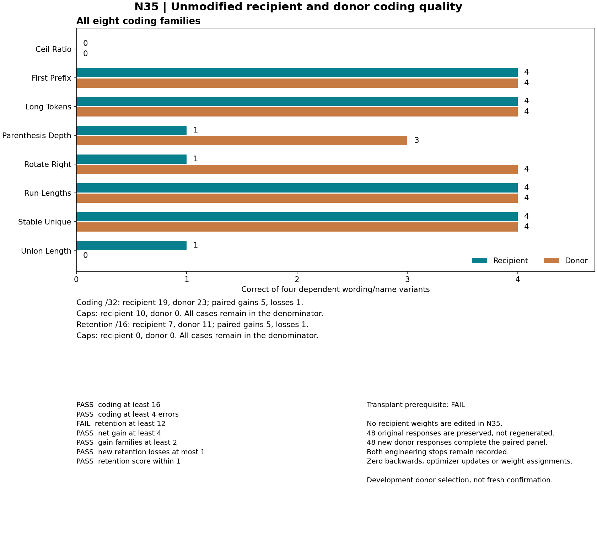
Q50 / N36: conditional connected-neuron transplant
Can a fixed already-trained donor group improve recipient coding through direct copying without fitting?
unexecuted prerequisite failed · Parents: Q49, Q10, Q13
Question provenance
Latest human neuron-transplant proposal U15. N35 must first establish a usable original and stronger donor under the same interface.
Method
A pre-output intent fixes final native MLP 34, 128 connected neurons and branch strength 1. Twelve arms retain original/donor parents, silent branch, native addition/amplification, two random donor groups, incoming/outgoing hybrids, group replacement and whole-final-MLP replacement. Source-only selection and strict matching must freeze before execution. No learned bridge or training. A separate pre-output design fixes four neutral recipient-prefill contexts, seven source/activity magnitude metrics, inclusive control/target bands from 0.8 to 1.25, minimum pool of 16 and disjoint sequential draws using seeds 4951 and 4952. Coordinates remain unselected. Branch strength 1 is already fixed; no source measurement or construction occurs unless the prerequisite passes. This design is not an execution-ready protocol.
Result
Original retention is 7/16 against the prospectively required 12/16. No source calibration, group selection, copied parameters, graft forward or transplant output occurs. All conditional designs and priors remain preserved. A comparison of unmodified checkpoints does not test a transplanted recipient.
Interpretation
A compatible branch does not establish useful knowledge transfer. Coarse final-MLP replacement is a secondary control and not full transformer insertion. Reused development results would still require fresh confirmation.
Next question
Leave this conditional experiment unexecuted. Do not lower thresholds, change retention tasks or select a different donor from the closed outcomes.
Direction decision
Leave the conditional transplant unexecuted after its failed prerequisite. Resume the unchanged N34 anatomical copying question.
Q51 / N37: adequate-output native continuation
What does the unmodified model produce when every interrupted response is allowed to finish under an adequate shared output budget?
complete private host audited closed · Parents: Q49, Q48
Question provenance
Direct human U16. Treat avoidable inference limits as implementation issues rather than evidence of model inability.
Method
A separate prospective continuation retains all finished replies and all cases. Every interrupted own-history trajectory must replay its exact recorded token choices, logits and cache before free continuation to EOS or the shared 2048-token bound. The hidden executable oracles stay unchanged on the host. No weight edit, training, reroll or new task wording.
Result
All 96 records and every guard pass. Ten native continuations finish, while 86 finished records and grades carry exactly. The unmodified original scores 24/32 coding and 7/16 retention; the donor scores 23/32 and 11/16. The donor gains two and loses three across all 32 coding cases. Actual work is 5132 forwards, 6299 input exposures and 2572 new suffix tokens, with zero backwards, assignments or optimizer updates. Worker time is 739.075 seconds and notebook time 818.370 seconds, not charged quota.
Interpretation
Adequate-output baseline on eight dependent coding families. No useful neuron-edit gain or transplant is established. All historical grades and prerequisite stops remain closed.
Next question
Q52: freeze compact token-aligned observation over every audited trajectory, then test causal candidates prospectively.
Direction decision
Resolve an inference bottleneck before claiming useful surgery. Reuse finished responses and warm-model execution where valid.
Q52 / N38: token-aligned native observation
Which native MLP channels and layer updates are active at particular task and response tokens, and which observations predict a reproducible causal effect under direct edits?
complete private host audited closed · Parents: Q51, Q34, Q48
Question provenance
Direct human U19 asks to see neuron activation during tasks and responses, under the new Digital Surgery direction.
Method
Read-only measurement over all 96 native trajectories. Sample up to eight prompt and thirty-two decision positions, 471 fixed channels, all-layer update norms and streaming case-balanced moments. No new generation, training or scorer calls.
Result
All 96 native observations and every mandatory guard pass. Every one of 10467 native argmax, full-logit and whole-cache comparisons agrees with its recorded trajectory. The original has 1429 sampled timeline positions and the donor 1436, each with 471 fixed channels, layer statistics and case-balanced moments over all 337920 channels. Scientific outputs total 29,521,849 bytes. Actual work is 19557 input exposures, zero new tokens, backwards, parameter assignments or optimizer updates. Worker time is 1883.847 seconds and notebook time 1932.386 seconds, not charged quota. Closed scorers are not called. Separate host annotations cover all 10467 existing tokens without regrading.
Interpretation
Actual native observation is now feasible on this panel without changing outputs or model state. These sampled traces are not a complete per-token map, a semantic role, causal feature alignment or coding improvement. Raw arrays and timelines remain private. Comment and string frequencies differ across models and must be controlled before selecting a coding feature.
Next question
Q53: test native comment entry with a separately frozen full-site gate, adequate matched contexts and strict random controls before interpreting a sparse group.
Direction decision
Broaden observation beyond one task score while keeping direct causal checks and useful coding as the goal.
Q53 / N39: native comment-entry control
Can a fixed native channel group control entry into Python comments while preserving executable correctness and retention?
complete private host audited closed · Parents: Q52, Q51
Question provenance
Development hypothesis from U19 native observation and the pre-activation text-context checks. It is not a reopened N36 transplant.
Method
The frozen N39 protocol uses 42 contexts with the same task family and processed-token ID, divided into six strata. Actual native donors at layers 24 to 34 must pass a fixed bidirectional full-site gate before any 32-channel selection. Two random groups use strict magnitude matching. Native zeroing, gain 2, rescue, conditional cuts and sixteen retention cases remain separate. No trained vector or parameter update.
Result
All N39 guards pass after a preserved, dated host metadata-order repair. Full late opposite donors change 19 of 20 native comment-entry choices and 21 of 22 native code choices; same-class donors preserve 41 of 42. The selected 32 channels and both strictly matched random groups each cause zero opposite-choice transfers, zero clean-entry losses and zero conditional-transfer losses. Each group retains 7 of 16 strict retention cases with no gain, loss or cap. The complete sparse primary fails. All 1937 native decision replays, 1302 current-cache checks, 294 native self/rescue checks, 126 conditional-self checks and 168 restorations pass. Zero backwards, parameter assignments or optimizer updates.
Interpretation
The complete sparse role primary fails. A whole late site is conditionally sufficient for the current comment choice; this is not individual neuron meaning, a complete circuit or coding improvement. Posthoc saved probabilities move with mixed signs without choice flips. The original frozen auditor fails on one tied maximum because topk order differs from greedy argmax; six valid and fourteen invalid synthetic checks validate the versioned maximality repair. Original source, outputs, criteria and failed audit remain preserved. The host does not recompute checkpoint logits or weights.
Next question
Q54: freeze and implement the independent full-program utility protocol using exactly the prescribed groups and factor zero, with both randoms and the fixed simple instruction. The N39 role failure stays failed; no new rank, dose or transplant.
Direction decision
Keep every negative and finite effect. Evaluate the already-prescribed global intervention on complete programs separately; do not infer utility from current-token probabilities.
Q54 / N40: conditional complete-function utility
Can a fixed native group reduce unnecessary output while preserving complete-program correctness, and how does it compare with a simple instruction?
complete private host audited primary failed closed · Parents: Q53, Q51
Question provenance
Direct human coding and practical surgery goals. Separate program utility from the current lexical role assay; fixed before any N39 output access.
Method
Keep exactly the audited N39 selected32 and both random32 groups under prescribed outgoing-column factor zero. All 32 coding and 16 retention cases remain, with exact native carries and one fixed simple instruction. Require exact physical versus all-position activation-zero agreement before any new reply.
Result
All 240 records and mandatory guards pass: 192 new replies and 48 exact original carries. Every new reply reaches native EOS; the longest has 974 tokens, so no U23 continuation is needed. Coding correctness is original 24/32, selected zero 26/32, random A 25/32, random B 24/32 and instruction 22/32. Selected zero has two gains and no losses, both within one task family; one gain also appears under each random. Random A has one gain/no loss, random B one gain/one loss, and the instruction two losses/no gains. Retention remains 7/16 in every condition without gains or losses. The selected mean token ratio is 1.02717 across all 32 coding cases and 0.99088 across the originally-correct 24; conservative comment-reduction lower bounds are negative. The complete output-reduction primary fails. The instruction mean ratio is 0.69298 but loses two correct programs. Actual counts are 27321 forwards, 83833 input exposures, 26155 new tokens, 126 manual assignments and zero backwards or optimizer updates. Worker time is 3634.698 seconds and notebook time 3687.729 seconds, not charged quota. The exact 585192-byte compact column bundle and all policies are retained. The distinct U24P prerequisite also passes: both full original BF16 replicas fit concurrently, and all 288 native decisions plus 96 first-cache witnesses match the unchanged parent. No full response is regenerated or regraded.
Interpretation
Output reduction is not established. Two extra correct reused-development programs are an exploratory accuracy lead within one family,with overlapping random-control repair. This is not fresh confirmation,a semantic role or a confirmed useful coding improvement. The simple instruction shows a length/correctness tradeoff. Weak7/16retention remains explicit. All historical failures and original grades stay unchanged.
Next question
Keep N40 closed. The full-replica prerequisite now passes. Pursue the separate frozen N41 fresh balanced coding-accuracy test with the exact selected and both random deletions, keeping every case, family and fixed dose. No neuron construction or transplant-prerequisite bypass.
Direction decision
Test practical alternatives and avoid credit for shortening already-wrong programs. No transplant or failed-prerequisite bypass.

Q55 / N41: conditional fresh coding accuracy
Does the exact fixed native deletion improve complete-function coding on fresh balanced cases compared with original, both randoms and a simple instruction?
phase A audited pass phase B private RUNNING no B outputs accessed · Parents: Q54, Q53
Question provenance
Original human coding goal and the two one-family N40 development repairs. Separate accuracy confirmation from the failed output-reduction primary.
Method
Frozen fresh accuracy screen: 32 new semantic contracts, each with two bindings, yield 64 coding prompts across eight related dependent families, plus 32 retention prompts. The unmodified baseline is generated once on two isolated GPUs and graded once against independent hidden oracles. Its predeclared gate passes. B applies the exact selected 32 channels and both fixed random groups under global physical column zeroing, plus the fixed instruction control. A prospective dated amendment reuses 32 unchanged instruction-control retention replies. All 480 condition records remain: 96 original carries, 32 additional exact reuses and 352 new replies. Native EOS has no arbitrary response-token ceiling.
Result
Phase A is complete, private, host audited and closed. All 96 responses end at native EOS. All 64 coding sources are valid; 55/64 coding and 17/32 retention replies are correct. Nine executable coding errors span three families. Every baseline prerequisite and all source, identity/cache, state and counter guards pass. Actual work is 21,193 forwards, 31,868 input exposures and 21,181 new tokens, with zero backwards, assignments or optimizer updates. Notebook time is 1,655.268 seconds, not charged quota. Both full models generate concurrently with 1,299.755 seconds of overlap, without a measured speed multiplier. The B retention-reuse amendment froze before B execution and A output access; original counts and source are preserved. New fixed-column/native-EOS integration passes 16 random forwards and 168 exposures, with four corrupt-column refusals. The physical guard rejects eight corruptions; the measurement reader rejects ten. Isolated imports, package/cells and Ruff pass. All 161 actual B source/data/parent hashes are frozen. B is running privately with exact server source/privacy, no datasets and no output access. No fresh edited result exists yet.
Interpretation
The N40 repairs are a development lead, with one shared random-control repair and no semantic role. A fresh test can fail or stop; it cannot erase N40 or justify selecting only prior errors. Eight families remain dependent.
Next question
At actual B terminal, verify all 161 frozen hashes, then collect_n41_outputs_B once and invoke the frozen auditor once. Preserve 96 original grades and 32 identical retention reuses; grade only 352 new replies. Keep all 480 records, all gains/losses, every family and all primary clauses. No new dose, coordinate, wording or completed-reply rerun.
Direction decision
Pursue the fixed accuracy lead through fresh confirmation, without new parameter fitting, strength search, neuron construction or a transplant-prerequisite bypass.
Every recorded run
All 78 compute-ledger entries, including early failures and reruns. Durations retain their original scope; unknown values remain unknown. Runner time is not charged GPU quota. Machine-readable run history.
| Seq. | Run | Recorded seconds | Outcome |
|---|---|---|---|
| 1 | engineering_smoke_v1_v2_v3 | 917.22 | Outcome details are in the linked experiment question record. |
| 2 | E00_v1 | 125.71 | dependency failure |
| 3 | E00_v2 | Not recorded | text/vision MLP selection failure; exact duration unavailable |
| 4 | E00_v3 | 108.68 | hook IO valid; cache-off semantics invalid for scientific use |
| 5 | E01_v1 | Not recorded | failed before model load; no optimizer steps |
| 6 | E01_v2 | 1111.50 | 96 base generations, 37 verified; OOM before optimizer updates |
| 7 | E01_corrected_v1 | 108.91 | two-device consistency gate failed; no generation or training |
| 8 | E01_corrected_v2 | 1842.43 | Complete: 40 updates per adapter, 72 dev predictions, paired 35-layer traces |
| 9 | E01B_v1 | 3857.61 | Complete: four arms40 successful updates each,150 development predictions,25 NLL references/arms,175 layer/arm traces |
| 10 | E02_seed7341_fraction0.001_v1 | 3330.72 | Complete validated:192 dev predictions, checkpoint/sham replay exact, all hooks observed; residual group11/24 equals sham with no task flips |
| 11 | E02_seed8462_fraction0.001_v1 | 3508.56 | Complete validated192 predictions; sham14/residual12/full12/boundary13/weight13/random12,14,13 |
| 12 | E02_seed7341_fraction0.01_v1 | 3335.45 | Complete validated192 predictions; sham11/residual14/full12/boundary11/weight11/random9,12,11. Single secondary seed, inconclusive. |
| 13 | E02_seed8462_fraction0.01_v1 | 3512.38 | Complete validated192 predictions; sham14/residual13/full12/boundary12/weight13/random9,13,11. First-seed gain not replicated. |
| 14 | E03_seed8462_v1 | 1778.71 | Complete validated163 optimizer calls/445 supervised targets/74 synthetic-zero steps/96 dev predictions/840 arrays. All6 same8/16 outcomes;zero-vs-standard late effective error.0111,activation error.2513 (fails.10 tolerance). |
| 15 | C01_batch01_v1 | 5126.07 | Clean budget pause;179/640 fixed ungraded predictions,43439 tokens,all replay/input-source audits pass |
| 16 | C01_batch02_v1 | 5111.55 | Clean budget pause;359/640 cumulative fixed ungraded predictions,180 new/43532 new tokens,prior179 preserved;all replay/hash/version audits pass. |
| 17 | C01_batch03_v1 | 5106.48 | Clean budget pause;586/640 cumulative fixed ungraded predictions,227 new/43680 new tokens,prior359 preserved;all replay/hash/version audits pass. |
| 18 | C01_batch04_v1 | 1113.80 | Complete640/640 frozen ungraded predictions;54 new/9013 tokens;all4 batches,source/history/privacy and offline token/text audits pass. |
| 19 | E03R_seed7341_v1 | 1788.43 | Complete validated163 optimizer calls/445 targets/74 zero updates/96 dev predictions/840 arrays. Weight error.02794,activation error.21195 fails tolerance. Standard9/16,others8/16;one gainp1 survives stress,with cap qualifiers. |
| 20 | E04_rank_controls_v1 | 110.15 | ERROR before measurements:live precision guard rejected inventory before saving its values;0 predictions/0 optimizer steps. Failed source and receipts preserved. |
| 21 | E04_rank_controls_v2 | 126.80 | ERROR before experimental predictions:scope guard included247 nontext placeholder states;all129 decoder modules valid NF4/BF16. Exact source/diagnostic preserved. |
| 22 | E04_rank_controls_v3 | 3617.10 | COMPLETE private validated:13conditions/208predictions/1820arrays/2460proofs,zero optimizer updates;all noops and independent host grades exact. |
| 23 | N01_v1 | 961.74 | Complete private hostvalidated43conditions/2320decisions;silent8newneurons+64unitresidualMLPcompatibility passes;zero optimizer updates;no coding improvement claim. |
| 24 | N02_v1_failed_buffer_inventory | 137.16 | Engineering failure before predictions:layer_scalar is a buffer;parameter-only shape lookup failed. BF16source downloaded/hashed and text model loaded;no interventions or coding conclusions. |
| 25 | N02_v2_failed_diagnostic_JSON | 131.77 | Engineering failure before predictions:HFloading diagnostics contain sets;strict JSON serialization failed. Source/shapes/media/head checks had passed. |
| 26 | N02_v3 | 318.37 | Complete host-audited engineering:460measurements across unquantized BF16and same-parent NF4;all hard gates and10algebra comparisons pass. Physical delete/direct output edit/clone/zero and prescribed nonzero new neuron executed. BF16split clone has max0.125logit deviation within fixed tolerance;no coding benefit tested. |
| 27 | N03H_host_paths | 0.50 | 8configs/96interventions/120forwardcalls;all predicted paths pass;random weights only |
| 28 | R01_v1 | 144.76 | 24/24output hashes and18/18prior projection hashes exact;36edited projection hashes recorded;zero training |
| 29 | N03_v1 | 2176.92 | 896predictions/allhostchecks pass;no outcome changes;task and contrast limitations preserved |
| 30 | N04_v1 | 201.54 | Original32predictions preserved;native baseline cache bound failed before any connection execution |
| 31 | N04_v2 | 758.77 | All288records audited;copied history opens late-past path;key-only2/8development gains,p.5;full replacements break32/32;no established coding gain |
| 32 | N05_v1 | 1665.50 | 336outputs audited;selected/randoms same1loss;rounding format/cap dominated;no role/gain;0updates |
| 33 | N06_v1 | 355.72 | All 200 outputs audited. Joint early MLP opposite transfer16/16,same-policy preservation14/16;K/V no flips;no gain or individual role. |
| 34 | N07_v1 | 897.50 | All600audited. No eligible layer. Layer0flips16/16under both donor controls;layers4/9have2restricted flips each. No semantic-role or coding-gain claim. |
| 35 | N08_v1 | 919.72 | All660audited;B05_09selected byfixed size/start rule:conditional same-rule14/16,opposite0/16,recipient16/16. No sparse role or original-model gain. |
| 36 | N09_v1_native_neuron_discovery | 114.86 | Planned strict matching stop;0newoutputs,32measurement backwards,4exact logits,zerooptimizerupdates. |
| 37 | N10_v1_matchable_native_neurons | 328.92 | Planned baseline retention stop after168outputs;allguards pass;0sparse interventions,0newbackwards,0updates. |
| 38 | N11_v1_native_neuron_necessity | 1505.44 | All1152records audited;primary criterion fails;selected2rescues/4conditional cut losses versusrandom0/0;allindividualcontrols equal;nooriginal-modelgain. |
| 39 | N12_v1_rare_unit_baseline_stop | 140.02 | Planned40record baseline stop before any edit;32new/8carried,filter8/8,predicate8/8,extremum0/8,rounding0/8,retention8/8.0updates. |
| 40 | N13_v1_fixed_rare_unit_and_permanent_edits | 964.26 | All640records audited,600new/40carried. All16conditionssamecorrectness;0ruletransfers/0gains/losses. Permanent0/2matchesglobalhookexact80cases. All200identity/32restorationguards pass;0updates. |
| 41 | N14_v1_full_site_semantic_positive_control | 618.54 | 400records audited,360new/40carried. Block5..9opposite14/16,same16/16 passes;L0same0/16confound;early0..13same13/16fails. All8retention and120self/120generatedidentity/20restorationguards pass.0updates. |
| 42 | N15_v1_semantic_layer_pair_decomposition | 1293.98 | All 920 records and mandatory guards pass; no single layer or adjacent pair meets the predefined semantic gate. Zero backward passes and updates. |
| 43 | N16_v1_complete_remaining_layer_subsets | 2812.65 | All1880records and mandatory guards pass. Prospective site layers5,6,9 selected:opposite8/16,same16/16,all8retention. No individual role or useful gain.0updates. |
| 44 | B01_v1_conversation_native_column_edits | 978.35 | All192records audited,158new,16closedparentcarry,18withinrunreuse. All160chatratings frozen before unblinding;allconditions4/4coding,no clear personality shift.0updates. |
| 45 | B02_v1_startup_scope_error | Not recorded | Pre-inference local-variable shadowing error,0predictions/0modelforwards/0weightinterventions/0updates. Source/privacy/failure preserved. |
| 46 | B02_v2_whole_MLP_reversal | 486.23 | All64records/128derivedreadings audited. Base/aligned normal raw4/4coding;all other cells0/4. All48restorations and source/parameter/counter guards pass;0updates. No semantic inversion or gain. |
| 47 | N17_v1_matched_native_channels | 1123.04 | All1002records audited,708new/120parent/174references. Allthreecausalgatesfail;9unitsnull. Oneincidentalextremumcasealsogainedbyrandom. Allscope/cache/self/restorationguards pass.0updates. |
| 48 | N18_v1_task_informed_position_gate_stop | 219.27 | All160records audited;full-site opposite0/16,same16/16,all8retention. Plannedstop before quarter selection/intervention. All40self/12pairedcache/8restorationguards pass;0updates. |
| 49 | N19_v1_generation_config_gate_failure | Not recorded | Raw repetition_penalty None rejected before any model forward, edit or prediction. Preserve all source and failure. |
| 50 | N19_v2_current_code_decision | 426.55 | All399records audited. Full current-state13/13opposite transfer,same13/13. Three fixed units0transfers/losses,all clean8retention. Rare-unit primary fails. Startup/auditor failures preserved. |
| 51 | N20_v1_strict_current_groups | 1052.42 | All840audited;selected64/random64/nested16all0transfer/cleanloss/conditionalcutloss;primaryfailed;all exact guards pass. |
| 52 | N21_v1_global_native_columns | 2203.11 | All160audited. Original/identity/selected12of24,randoms14of24. Baseline10sourceformat failures exceed8limit;benefit unassessable. No selected gain,all mandatory guards pass. |
| 53 | N22_v1_stage_by_site | 231.32 | All273audited,52new. Missingall35/end andthree/current both0of13transfer,same13of13. Existingcurrent/all35transfers13of13. Allmandatoryguards pass. |
| 54 | N23_v1_operand_order_baseline | 152.97 | All 40 records audited. Primary role 16/32, zero complete blocks, retention 5/8. Planned stop before every neuron edit. |
| 55 | N24_v1_finite_decision_scores | 728.52 | All 578 measurement trajectories audited. Selected64 opposite margin +1.57358 versus matched +0.02502/-0.05078; same-policy +0.02194. All current hashes reproduce N20. Zero new completions or program regrading; prior program null unchanged. |
| 56 | n25_phase_A_v1 | 266.19 | All40originals audited;fixed baseline gate passes:23/32coding,8/8retention,28source-valid,5source-validerrors across3families. No neuron edits. |
| 57 | n25_phase_B_v1 | 886.12 | All200audited,160new/40exact carried. All5conditions23/32coding,8/8retention;zero gains/losses;fixed utility primary fails. Every new token sequence equalsoriginal.54immediate logit hashes change ineachgain arm without cache/history persistence. |
| 58 | n26_v1 | 1629.25 | All320audited:240new/40carry/40guardedrefs. Suppression coding23base/25selected/25randomA/24randomB. Selectedsame2gainsasrandomA. Amplification22selected/23randomA/22randomB. All8retention. Bothprimaryscreensfail. No specific group advantage. |
| 59 | n27_phase_A_v1 | 180.39 | All40 records and mandatory guards pass. Baseline21/32 coding,8/8 retention;all32 role sources valid,11 wrong answers,no complete8-case block. Planned stop before all edits. Host interpreter import failure preserved;unchanged auditor passes under validated research Python. |
| 60 | n28_phase_A_v1 | 139.41 | All24 originals and every guard pass:16/16 coding,8/8 retention,no caps. No edits in Stage A. The frozen all-case adequacy gate permits Stage B. Kernel title/ID alias resolved on the one existing private job,without another push or model regeneration. |
| 61 | n28_phase_B_v1 | 465.77 | All168records/guards pass:144new,24exactcarry. Primary0/8completepairs. Same-order opposite16/16transfer,same16/16preservation. Both reversed-order role arms0/16source-valid. All8retention,allidentity/rescue/cache/restorations pass. No semantic role or coding gain. |
| 62 | n29_v1 | 323.70 | All120records/guards pass;primary0/8pairs. Both foreign arms change numerical witnesses but every emitted sequence stays original. No gain. |
| 63 | n30_v1 | 533.96 | All 399 records and mandatory guards pass. The predefined finite-bias primary fails one of 27 components: the conditional-cut effect in discovery mapping 0, label 0 ties control B at 0.015625. The other 26 components pass, without replacing the conjunction. Target mean effects across all 13 cases are 0.0558894231 for opposite donors, 0.0348557692 for zeroing and 0.0291466346 for conditional cuts; both controls are smaller in these aggregates. All three units show 0/13 opposite-program transfers, zero clean ablation losses and zero conditional-transfer losses. All three new zero-arm retention sets pass 8/8, with no caps or coding gains. N31 remains unexecuted because its prospectively fixed prerequisite fails. |
| 64 | n32_A_v1 | 87.33 | Frozen expected tokenization records contain input_tokens only. The unchanged runner encoder returns id,input_tokens,template_text_sha256,input_ids_sha256. Full-dictionary equality therefore stops before any forward. |
| 65 | n32_A_v2 | 190.32 | All40records and mandatory guards pass. Planned baseline stop: role19/32,retention8/8,no caps. Predicate14/16;filter5/16. Ten source failures and three executable wrong answers. Only2/8complete blocks and10/16valid common-prefix pairs. No neuron intervention or B/C phase executes. |
| 66 | n33_A_v1 | 128.41 | All40audited. Planned baseline stop: role28/32,predicate12/16,filter16/16,retention3/8,one cap,required first operators28/32. No edits or later phases. |
| 67 | N35_v1_memory_validation_failure | 81.43 | Outcome details are in the linked experiment question record. |
| 68 | N35_v2_recipient_complete_donor_metadata_stop | 824.03 | Outcome details are in the linked experiment question record. |
| 69 | N35_v3_donor_only_resume_and_combined_assessment | 426.84 | Outcome details are in the linked experiment question record. |
| 70 | N34_v1_native_block_localization | 855.72 | No block passes the full primary; late copying blocks lose retention under zeroing. All1176records and guards pass. |
| 71 | N37_v1_native_continuation | 739.08 | All96records and guards pass. Original24/32coding,donor23/32;retention7/16and11/16. All extended replies finish. No neuron edits. |
| 72 | N38_v2_read_only_native_activity | 1883.85 | All96native traces and10467exact decision/cache checks pass. Compact scientific outputs29521849bytes. Read-only observation;no role or coding-gain claim. |
| 73 | N39_v1_native_comment_control | 623.92 | 42contexts/1302current interventions/48new retention responses;full late donor control passes,sparse primary fails;all guards pass under versioned tie-metadata auditor repair. No model rerun. |
| 74 | N40_v1_startup_memory_validation_failure | 75.69 | Whole-parameter finite validation OOM before Counter registration. Zero forwards, edits and predictions by source-order proof. Existing chunked validator reused in a versioned repair; conditions unchanged. |
| 75 | U24H_two_GPU_random_runtime | 62.84 | Two distinct T4 devices and concurrent independent workers pass; all eight full-logit/raw-cache pairs exact. Two notebook jobs were concurrently RUNNING. Random models only, no pretrained throughput claim. |
| 76 | N40_v2_global_column_utility | 3634.70 | All240records and guards pass;all192new replies EOS. Coding original24/32,selected26,randomA25,randomB24,prompt22. Selected2gains/0losses within one family;one also appears in both randoms. Output-reduction primary fails. |
| 77 | U24P_full_BF16_parallel_readiness | 222.61 | Both full original BF16replicas fit concurrently;all288native decision/logit/cache comparisons and96first caches exact,all source/state guards pass. No new responses,edits or grades. |
| 78 | N41A_v1_fresh_original_native_EOS_two_GPU | 1655.27 | All96native-EOS baseline responses and guards pass;coding55/64,all64source-valid,retention17/32;fixed baseline prerequisite passes,no edit gain measured. |
Active run
N41B_v1_fixed_fresh_edits_native_EOS_two_GPU: RUNNING. Launched 2026-10-31T22:22:06.877832+00:00. No runtime result is recorded yet.
Sequential event history
All 577 ledger events are represented in their original sequence. This public table includes reviewed fields only. Public event records and numeric fields.
| Seq. | UTC | Experiment | Event |
|---|---|---|---|
| 1 | Not recorded | E00 | launched private |
| 2 | Not recorded | E00 | failed dependency compatibility |
| 3 | 2026-10-28T20:01:49.696610+00:00 | E00 | failed instrumentation scope |
| 4 | 2026-10-28T20:02:05.882412+00:00 | E00 | launched private |
| 5 | 2026-10-28T20:05:56.879581+00:00 | E00 | complete measurement validation |
| 6 | 2026-10-28T20:06:43.443486+00:00 | E01 | dataset version cli failure |
| 7 | 2026-10-28T20:07:47.603250+00:00 | E01 | dataset ready private |
| 8 | 2026-10-28T20:09:48.300822+00:00 | E01 | launched private |
| 9 | 2026-10-28T20:10:31.905049+00:00 | E01 | failed input mount validation |
| 10 | 2026-10-28T20:12:02.076651+00:00 | E01 | input manifest repaired |
| 11 | 2026-10-28T20:13:25.483933+00:00 | E01 | launched private |
| 12 | 2026-10-28T20:21:24.508749+00:00 | E01 | known cache path confound identified before results |
| 13 | 2026-10-28T20:35:26.540258+00:00 | E01 | failed training preparation memory |
| 14 | 2026-10-28T20:38:35.284626+00:00 | E01 | launched private with fresh generation fallback |
| 15 | 2026-10-28T20:40:23.092235+00:00 | E01 | independent stress audit complete |
| 16 | 2026-10-28T20:41:33.506290+00:00 | E01 | failed device consistency preflight |
| 17 | 2026-10-28T20:45:12.120963+00:00 | E01 | launched private with verified recovery dataset |
| 18 | 2026-10-28T20:51:04.279949+00:00 | E01 | source gate diagnostic no training changes |
| 19 | 2026-10-28T21:54:17.035634+00:00 | E01 | completed verified development experiment |
| 20 | 2026-10-28T22:05:27.067211+00:00 | E01B | launched private |
| 21 | 2026-10-28T22:12:16.968175+00:00 | E01 | all fixed predictions regraded under evaluation v 2 |
| 22 | 2026-10-28T22:15:08.142823+00:00 | E01B | prefix control invariance check |
| 23 | 2026-10-28T23:10:01.506022+00:00 | E02 | prospective channel groups frozen locally |
| 24 | 2026-10-28T23:19:29.353208+00:00 | E01B | completed validated private |
| 25 | 2026-10-28T23:22:14.019128+00:00 | E02 | launched private |
| 26 | 2026-10-28T23:23:01.931903+00:00 | E02 | analysis clarification before outcomes |
| 27 | 2026-10-29T00:01:17.845322+00:00 | Project operations | private paper development draft built |
| 28 | 2026-10-29T00:55:13.017530+00:00 | E02 | complete validated private |
| 29 | 2026-10-29T00:56:42.269005+00:00 | E02 | launched private |
| 30 | 2026-10-29T01:06:42.468318+00:00 | E03 | prospective development diagnostic design recorded |
| 31 | 2026-10-29T02:03:37.177084+00:00 | E02 | complete validated private |
| 32 | 2026-10-29T02:09:27.060878+00:00 | E02 | launched private |
| 33 | 2026-10-29T02:32:27.946716+00:00 | E03 | analysis clarification before GPU launch |
| 34 | 2026-10-29T02:46:26.466136+00:00 | E03 | private input dataset and notebook prepared |
| 35 | 2026-10-29T03:15:50.559275+00:00 | E02 | complete validated private |
| 36 | 2026-10-29T03:16:34.036184+00:00 | E02 | launched private |
| 37 | 2026-10-29T03:16:34.036184+00:00 | E03 | host analysis frozen before GPU |
| 38 | 2026-10-29T03:21:56.490037+00:00 | final_confirmation_preparation | data independent grader validated |
| 39 | 2026-10-29T03:55:04.303455+00:00 | E03 | direct numerical prior work recorded before GPU |
| 40 | 2026-10-29T04:07:14.935215+00:00 | final_confirmation_preparation | separated pipeline sources prepared before test access |
| 41 | 2026-10-29T04:51:50.700012+00:00 | E02 | complete validated private |
| 42 | 2026-10-29T04:53:20.818064+00:00 | E03 | launched private |
| 43 | 2026-10-29T04:54:34.701529+00:00 | C01 | protocol frozen before final data and predictions |
| 44 | 2026-10-29T05:05:10.649298+00:00 | C01 | reference audit and private question packet ready |
| 45 | 2026-10-29T05:11:53.657067+00:00 | C01 | dated continuation version guard and package recheck |
| 46 | 2026-10-29T06:02:45.707696+00:00 | E03 | complete validated private |
| 47 | 2026-10-29T06:03:43.155527+00:00 | C01 | launched private prediction only |
| 48 | 2026-10-29T06:49:50.379495+00:00 | E03R | conditionally planned replication prepared private not launched |
| 49 | 2026-10-29T06:49:50.379495+00:00 | Project operations | private paper updated and visual QA passed |
| 50 | 2026-10-29T07:00:23.377321+00:00 | Project operations | paper embedded label word audit |
| 51 | 2026-10-29T07:23:15.822141+00:00 | Project operations | ungraded artifact auditor and replication summary prepared |
| 52 | 2026-10-29T08:08:53.086494+00:00 | C01 | partial complete validated private ungraded |
| 53 | 2026-10-29T08:09:46.340342+00:00 | C01 | launched private ungraded continuation |
| 54 | 2026-10-29T08:15:21.560562+00:00 | Project operations | all comparison confirmation figure source prepared |
| 55 | 2026-10-29T09:17:56.210209+00:00 | Project operations | posthoc development two seed activation description |
| 56 | 2026-10-29T10:14:10.590821+00:00 | C01 | partial complete validated private ungraded |
| 57 | 2026-10-29T10:14:14.558761+00:00 | C01 | launched private ungraded continuation |
| 58 | 2026-10-29T11:15:20.094748+00:00 | Project operations | posthoc development ranking stability validated |
| 59 | 2026-10-29T11:21:35.069917+00:00 | Project operations | private paper tightened new posthoc descriptions integrated |
| 60 | 2026-10-29T12:16:27.773911+00:00 | C01 | partial complete validated private ungraded |
| 61 | 2026-10-29T12:16:30.448289+00:00 | C01 | launched private ungraded continuation |
| 62 | 2026-10-29T12:25:22.832101+00:00 | Project operations | complete panel integrity checks and replication inputs ready |
| 63 | 2026-10-29T13:18:48.862680+00:00 | C01 | complete validated private ungraded |
| 64 | 2026-10-29T13:19:24.567982+00:00 | E03R | launched private frozen seed replication |
| 65 | 2026-10-29T13:25:58.983592+00:00 | C01 | complete frozen heldout confirmation scored private |
| 66 | 2026-10-29T14:04:12.760387+00:00 | E03R | complete private development replication validated |
| 67 | 2026-10-29T14:13:17.803217+00:00 | Project operations | candidate E04 CPU controls prepared not GPU measurement |
| 68 | 2026-10-29T14:13:17.803217+00:00 | Project operations | private paper complete confirmation and optimizer replication integrated |
| 69 | 2026-10-29T14:34:31.633108+00:00 | Project operations | precision reporting erratum and private paper corrected |
| 70 | 2026-10-29T14:34:31.633108+00:00 | Project operations | E04 private inputs and frozen GPU analysis ready |
| 71 | 2026-10-29T14:39:15.771035+00:00 | E04 | launched private frozen rank controls |
| 72 | 2026-10-29T14:45:01.469430+00:00 | Project operations | E04 v 1 engineering precision guard failure preserved |
| 73 | 2026-10-29T14:54:17.791809+00:00 | E04 | launched private engineering retry before own predictions |
| 74 | 2026-10-29T14:40:16.061866+00:00 | Project operations | temporary literature render cache cleaned |
| 75 | 2026-10-29T15:21:05.730165+00:00 | Project operations | E04 v 2 scope guard failure diagnosed before any predictions |
| 76 | 2026-10-29T15:39:57.868819+00:00 | E04 | launched private text scope guard repair before experimental predictions |
| 77 | 2026-10-29T15:39:57.868819+00:00 | Project operations | posthoc all optimizer token agreement pairs retained |
| 78 | 2026-10-29T17:04:31.184606+00:00 | E04 | v 3 complete private validated |
| 79 | 2026-10-29T17:10:46.768762+00:00 | PAPER | private E04 integration visual QA complete |
| 80 | 2026-10-29T18:18:15.730267+00:00 | Project operations | user scope correction and neuron edit engineering |
| 81 | 2026-10-29T18:31:43.197229+00:00 | Project operations | human neuron scope and fresh 48 h recorded |
| 82 | 2026-10-29T18:44:40.613273+00:00 | N01 | prospective protocol data sources and preflight ready |
| 83 | 2026-10-29T18:45:43.103251+00:00 | N01 | v 1 running server private source exact |
| 84 | 2026-10-29T18:48:25.479102+00:00 | N01 | engineering feasibility gate explicit after human clarification |
| 85 | 2026-10-29T18:57:38.188504+00:00 | Project operations | human hard no training constraint |
| 86 | 2026-10-29T19:19:11.165385+00:00 | N01 | complete private host validated |
| 87 | 2026-10-29T19:29:14.625125+00:00 | Project operations | human precision pair and html logbook intent |
| 88 | 2026-10-29T19:41:03.076808+00:00 | Project operations | human authorizes public project repository |
| 89 | 2026-10-29T19:58:01.073922+00:00 | Project operations | public project created from reviewed allowlist |
| 90 | 2026-10-29T19:59:59.129619+00:00 | research_operations | goal intent logbook public project and automation aligned |
| 91 | 2026-10-29T20:02:38.045319+00:00 | Project operations | writing preference recorded |
| 92 | 2026-10-29T20:23:51.059441+00:00 | N01 | n01 posthoc function analysis complete |
| 93 | 2026-10-29T20:23:51.059441+00:00 | N02 | n02 prospective engineering prepared |
| 94 | 2026-10-29T20:24:22.292040+00:00 | N02 | n02 v 1 launched private source verified |
| 95 | 2026-10-29T20:32:09.586567+00:00 | N02 | n02 v 1 buffer inventory failure preserved amendment before retry |
| 96 | 2026-10-29T20:33:46.934580+00:00 | N02 | n02 v 2 launched private source verified after buffer repair |
| 97 | 2026-10-29T20:43:39.444137+00:00 | N02 | n02 v 2 diagnostic serialization failure preserved amendment before retry |
| 98 | 2026-10-29T20:49:10.587470+00:00 | N02 | n02 v 3 launched private source verified after CPU loading rehearsal |
| 99 | 2026-10-29T20:51:47.973579+00:00 | N03 | n03 functional coding and token role intent recorded no GPU launch |
| 100 | 2026-10-29T21:01:59.102871+00:00 | N02 | n02 v 3 complete private host audited physical surgery precision pair |
| 101 | 2026-10-29T21:17:48.454785+00:00 | research_operations | human authorizes reproducible edited model bundles and professional README code |
| 102 | 2026-10-29T21:36:36.901207+00:00 | R01 | public model bundles packaged exact values and 18 host tests pass |
| 103 | 2026-10-29T21:41:32.418818+00:00 | R01 | r01 public package replay frozen after public bundle release |
| 104 | 2026-10-29T21:42:06.284131+00:00 | R01 | r01 public model package replay launched private |
| 105 | 2026-10-29T21:44:33.545876+00:00 | N03H | n 03 h random weight token path fixture complete |
| 106 | 2026-10-29T21:48:14.498962+00:00 | R01 | r01 public model reconstruction complete 24 exact output replays |
| 107 | 2026-10-29T22:10:47.147907+00:00 | N03 | n03 native neuron coding protocol frozen preflight passed |
| 108 | 2026-10-29T22:12:10.484780+00:00 | N03 | n03 private native neuron coding pilot launched |
| 109 | 2026-10-29T23:10:10.188626+00:00 | N03 | n03 complete host audited no coding or semantic role gain |
| 110 | 2026-10-30T00:49:07.255973+00:00 | N04H | n 04 h v 1 cache fixture failure preserved |
| 111 | 2026-10-30T00:49:07.255973+00:00 | N04H | n 04 h v 2 30 cases pass after dated cache amendment |
| 112 | 2026-10-30T00:49:07.255973+00:00 | N04 | n04 frozen copied memory gate preflight passed |
| 113 | 2026-10-30T00:50:04.763273+00:00 | N04 | n04 private fixed memory connection gate launched |
| 114 | 2026-10-30T00:55:20.303163+00:00 | N04 | n04 v 1 original BF16 cache gate failed before any connection |
| 115 | 2026-10-30T00:56:59.747574+00:00 | N04 | n04 v 2 cache diagnostic amendment frozen original 32 preserved |
| 116 | 2026-10-30T00:58:03.451055+00:00 | N04 | n04 v 2 private bounded resume launched without regenerating originals |
| 117 | 2026-10-30T02:12:39.461017+00:00 | N04 | n04 v 2 complete host audited late path opened coding effect unconfirmed |
| 118 | 2026-10-30T02:15:37.787093+00:00 | N05 | n05 native anchor role protocol frozen before task code |
| 119 | 2026-10-30T02:40:05.614303+00:00 | N05 | n05 prelaunch guard false assumption resolved by owned kernel search |
| 120 | 2026-10-30T02:42:07.292757+00:00 | N05H | n05 host anchor hooks 8 cases and 48 token oracle checks passed |
| 121 | 2026-10-30T02:42:07.292757+00:00 | N05 | n05 private native anchor functional pilot launched |
| 122 | 2026-10-30T03:35:08.563499+00:00 | N05 | n05 complete host audited no specific role with assay limits |
| 123 | 2026-10-30T03:47:03.610562+00:00 | Project operations | N06 protocol frozen before code |
| 124 | 2026-10-30T03:50:00.696588+00:00 | Project operations | N06H attempt 1 failed pretrained work not started |
| 125 | 2026-10-30T03:52:25.902844+00:00 | Project operations | N06 notebook builder import repaired |
| 126 | 2026-10-30T03:54:05.921117+00:00 | N06 | N06 v 1 launched private source verified |
| 127 | 2026-10-30T04:05:26.767465+00:00 | N06 | N06 complete all 200 host audited joint MLP site transfer |
| 128 | 2026-10-30T04:10:32.017326+00:00 | N07 | N07 v 1 launched private source verified |
| 129 | 2026-10-30T05:22:43.937203+00:00 | N07 | N07 complete all 600 audited no eligible single layer |
| 130 | 2026-10-30T05:25:13.417274+00:00 | N08 | N08 fixed block rescue protocol frozen before code |
| 131 | 2026-10-30T05:36:47.613310+00:00 | N08 | N08 v 1 launched private source verified |
| 132 | 2026-10-30T05:42:13.393068+00:00 | N06 | N06 allcondition aggregate figure reviewed |
| 133 | 2026-10-30T05:42:13.393068+00:00 | N07 | N07 allcondition aggregate figure reviewed |
| 134 | 2026-10-30T06:01:55.787486+00:00 | N08 | N08 complete all 660 audited B05 09 selected by frozen rule |
| 135 | 2026-10-30T06:11:15.898512+00:00 | N09 | N09 sparse role protocol frozen before code |
| 136 | 2026-10-30T06:19:39.652246+00:00 | N09 | N09H finite difference step diagnostic and repair |
| 137 | 2026-10-30T06:35:36.052480+00:00 | N09 | N09 v 1 private launch verified |
| 138 | 2026-10-30T06:38:27.609211+00:00 | N08 | N08 complete aggregate figure and all 33 model recipes reviewed |
| 139 | 2026-10-30T06:42:39.745791+00:00 | N09 | N09 planned discovery stop complete host audited |
| 140 | 2026-10-30T06:42:39.745791+00:00 | N10 | N10 matchable subpopulation protocol frozen before code |
| 141 | 2026-10-30T06:52:56.245624+00:00 | N10 | N10 host matchability selection complete |
| 142 | 2026-10-30T06:52:56.245624+00:00 | N10 | N10 prelaunch SaveKernel 400 preserved and private asset delivery repaired |
| 143 | 2026-10-30T06:52:56.245624+00:00 | N10 | N10 v 1 private launch source and input privacy verified |
| 144 | 2026-10-30T07:08:28.307068+00:00 | N10 | N10 planned new site retention stop host audited |
| 145 | 2026-10-30T07:08:28.307068+00:00 | N11 | N11 wording only protocol frozen before code |
| 146 | 2026-10-30T07:15:48.978945+00:00 | N11 | N11 v 1 private launch source and input verified |
| 147 | 2026-10-30T07:35:45.032530+00:00 | Methods review | Post N11 direction review recorded before output access |
| 148 | 2026-10-30T07:35:45.032530+00:00 | Methods consultation | Bounded generic NIM method review timeout preserved |
| 149 | 2026-10-30T07:49:58.532444+00:00 | N11 | N11 complete all records host audited primary failed |
| 150 | 2026-10-30T07:57:08.592764+00:00 | N12 | N12 rare unit and permanent edit protocol frozen before code |
| 151 | 2026-10-30T08:27:14.930566+00:00 | N12 | N12 private version 1 launched frozen sources and privacy verified |
| 152 | 2026-10-30T08:33:03.176338+00:00 | N12 | N12 planned baseline stop complete host audit |
| 153 | 2026-10-30T08:33:50.877359+00:00 | N13 | N13 narrow role scope frozen before code and interventions |
| 154 | 2026-10-30T08:37:11.713638+00:00 | N13 | N13 private version 1 launched source privacy verified |
| 155 | 2026-10-30T08:51:34.456892+00:00 | N12P | N12 recorded prefix contrasts posthoc no new forwards |
| 156 | 2026-10-30T08:55:11.149642+00:00 | Documentation | current model identity reconciled with verified BF16 primary historical anchor preserved |
| 157 | 2026-10-30T09:01:26.156948+00:00 | N13 | N13 all 640 host audited no rule transfer or coding gain |
| 158 | 2026-10-30T09:02:29.751428+00:00 | N14 | N14 full site scope check protocol frozen before implementation |
| 159 | 2026-10-30T09:23:59.465723+00:00 | N14 | N14 private version 1 launched frozen source and privacy verified |
| 160 | 2026-10-30T09:32:39.757780+00:00 | Host review | position and construction closest prior review before N14 outputs |
| 161 | 2026-10-30T09:36:47.132436+00:00 | N14 | N14 all 400 audited block 5 to 9 passes semantic site gate |
| 162 | 2026-10-30T09:39:36.626147+00:00 | N15 | N15 forward layer pair protocol frozen before implementation |
| 163 | 2026-10-30T09:49:24.244409+00:00 | N15 | N15 private version 1 launched after frozen source host and quota gates |
| 164 | 2026-10-30T09:57:02.525037+00:00 | N14 | complete grid figure and next localization documented |
| 165 | 2026-10-30T10:07:52.744554+00:00 | N14 | saved output structure posthoc no new forwards or grades |
| 166 | 2026-10-30T10:10:00.248793+00:00 | N14 | incidental gain replication unit checked posthoc |
| 167 | 2026-10-30T10:15:04.906025+00:00 | N15 | N15 all 920 host audited no eligible layer or adjacent pair |
| 168 | 2026-10-30T10:16:14.360229+00:00 | N16 | N16 remaining subset protocol frozen before implementation |
| 169 | 2026-10-30T10:21:38.885841+00:00 | N16 | N16 private version 1 launched after source host quota guards |
| 170 | 2026-10-30T10:24:10.693729+00:00 | Host literature review | causal abstraction and source localization limits checked |
| 171 | 2026-10-30T10:26:13.963953+00:00 | N15 | complete grid figure and private paper updated after all output audit |
| 172 | 2026-10-30T10:41:11.149312+00:00 | B01 planning | human chat observation idea recorded private panel prepared |
| 173 | 2026-10-30T10:43:39.929681+00:00 | B01 host preparation | private chat template checks pass after two preserved host repairs |
| 174 | 2026-10-30T11:00:01.648176+00:00 | B01 | chat protocol frozen before GPU implementation |
| 175 | 2026-10-30T11:00:01.648176+00:00 | B02 planning | human reversal idea recorded with explicit controls |
| 176 | 2026-10-30T11:12:38.778318+00:00 | N16 | complete private host audited |
| 177 | 2026-10-30T11:12:38.778318+00:00 | B01 host | prelaunch actual architecture and parent gates pass |
| 178 | 2026-10-30T11:15:22.635533+00:00 | B01 | private bounded chat panel launched |
| 179 | 2026-10-30T11:16:44.504087+00:00 | B02 host | reversal algebra and native architecture checks pass |
| 180 | 2026-10-30T11:21:43.122297+00:00 | B02 | prospective pretrained reversal grid frozen before GPU implementation |
| 181 | 2026-10-30T11:46:31.152289+00:00 | B01 | complete private audit and frozen blinded assessment |
| 182 | 2026-10-30T11:46:31.152289+00:00 | B02 host | current scope receipts and full counter grid passed |
| 183 | 2026-10-30T11:46:31.152289+00:00 | B02 | source auditor data and analysis frozen before launch |
| 184 | 2026-10-30T11:47:48.326480+00:00 | B02 | private reversal grid launched |
| 185 | 2026-10-30T11:58:38.252185+00:00 | B02v1 | startup failure preserved and scope repair frozen |
| 186 | 2026-10-30T12:01:47.959026+00:00 | B02v2 | corrected private grid launched with unchanged conditions |
| 187 | 2026-10-30T12:01:47.959026+00:00 | N17 planning | native channel followup intent recorded not an experiment |
| 188 | 2026-10-30T12:07:20.669609+00:00 | B02v2 analysis | prospective receipt destination isolated to preserve version 1 failure |
| 189 | 2026-10-30T12:25:19.538158+00:00 | B02v2 | complete private all conditions readings and guards audited |
| 190 | 2026-10-30T13:01:05.126049+00:00 | N17v1 | source site clarification no model forwards |
| 191 | 2026-10-30T13:01:05.126049+00:00 | N17v1 | host preparation import failure repaired |
| 192 | 2026-10-30T13:01:05.126049+00:00 | N17v1 | protocol source auditor frozen host and lint passed |
| 193 | 2026-10-30T13:02:51.403202+00:00 | N17v1 | private bounded launch source and privacy verified |
| 194 | 2026-10-30T13:05:08.274914+00:00 | N17v1 | documentation build schema repairs |
| 195 | 2026-10-30T13:15:28.457507+00:00 | N17v1 | prospective fixed counter arithmetic amendment |
| 196 | 2026-10-30T13:17:50.098504+00:00 | N16_posthoc | selected site joint cells reviewed before N17 outputs |
| 197 | 2026-10-30T13:28:37.777850+00:00 | N17v1 | complete private host audited all primary gates failed |
| 198 | 2026-10-30T13:33:29.823237+00:00 | N18v1 | task informed position and coverage protocol frozen before implementation |
| 199 | 2026-10-30T14:01:19.498069+00:00 | N18v1 | source auditor frozen host oracle lint and counter proofs pass |
| 200 | 2026-10-30T14:04:37.172018+00:00 | N18v1 | private bounded launch source and privacy verified |
| 201 | 2026-10-30T14:21:21.271686+00:00 | N18v1 | planned full site gate stop all 160 records host audited |
| 202 | 2026-10-30T14:21:21.460569+00:00 | N18_admin | closing helper import failure repaired without model calls |
| 203 | 2026-10-30T14:32:08.121863+00:00 | N19H | current decode step host protocol and native prefix alignment frozen |
| 204 | 2026-10-30T14:46:29.963891+00:00 | N19 | current step host feasibility passed and GPU protocol frozen before runner |
| 205 | 2026-10-30T14:50:45.792642+00:00 | private_neuron_paper | N17 nulls added word limit and all five pages verified |
| 206 | 2026-10-30T15:05:22.596782+00:00 | N19H | manual pipeline fixture FP64 transport failure preserved |
| 207 | 2026-10-30T15:07:49.970909+00:00 | N19H | requested capture key count fixture failure preserved |
| 208 | 2026-10-30T15:11:55.103683+00:00 | N19 | manual pipeline source and auditor frozen before GPU |
| 209 | 2026-10-30T15:17:28.054433+00:00 | N19 | current step helper scope limit recorded before outputs |
| 210 | 2026-10-30T15:18:57.797642+00:00 | N19v1 | private bounded launch source and privacy verified |
| 211 | 2026-10-30T15:19:57.438770+00:00 | N19/N20 | conditional post N19 scientific decisions recorded before outputs |
| 212 | 2026-10-30T15:22:30.868839+00:00 | N19v1 | generation config gate failure before model inference |
| 213 | 2026-10-30T15:24:33.472389+00:00 | N19H | optional boolean generation config host failure preserved |
| 214 | 2026-10-30T15:25:57.196957+00:00 | N19v2 | generation default startup repair frozen before launch |
| 215 | 2026-10-30T15:28:11.522187+00:00 | N19v2 | private corrected launch source and privacy verified |
| 216 | 2026-10-30T15:36:22.628044+00:00 | N19 | current token cache path limits recorded before outputs |
| 217 | 2026-10-30T15:39:48.295083+00:00 | N20_conditional_intent | within layer gate value construction route recorded before N19 outputs |
| 218 | 2026-10-30T15:42:16.694606+00:00 | N19v2_audit | auditor import failure preserved and two substitution repair frozen |
| 219 | 2026-10-30T15:46:55.195792+00:00 | N19v2_audit | wrong cache slot assumption preserved and pinned schema correction frozen |
| 220 | 2026-10-30T15:51:58.265603+00:00 | N19v2 | all 399 records host audited full site passed rare unit primary failed closed |
| 221 | 2026-10-30T15:57:56.184992+00:00 | N20 | strict current decision group protocol frozen before profile ranking or code |
| 222 | 2026-10-30T16:00:59.814938+00:00 | N20_selection | strict 64 and nested 16 matched before GPU and late cache invariance predicted |
| 223 | 2026-10-30T16:06:12.901049+00:00 | Project_documents | goal fragment wrapper assumption repaired without duplicate records |
| 224 | 2026-10-30T16:51:01.250147+00:00 | N20H | tiny Gemma current group host iteration 1 passed |
| 225 | 2026-10-30T16:53:53.684758+00:00 | N20H | tiny Gemma current group host iteration 2 passed |
| 226 | 2026-10-30T16:55:23.276365+00:00 | N20H | tiny Gemma current group host iteration 3 passed |
| 227 | 2026-10-30T16:57:08.505079+00:00 | N20H | tiny Gemma current group host iteration 4 passed |
| 228 | 2026-10-30T16:59:50.521187+00:00 | N20_host_freeze | synthetic package marker hash mismatch preserved before freeze |
| 229 | 2026-10-30T17:00:28.613181+00:00 | N20 | runner auditor private notebook and parent lineage frozen after host gates |
| 230 | 2026-10-30T17:24:42.508046+00:00 | Private_neuron_paper | completed N18 N19 evidence integrated all 19 policies and all latest pages verified |
| 231 | 2026-10-30T17:45:35.780451+00:00 | N21H | postnorm host protocol frozen before module probe |
| 232 | 2026-10-30T17:48:04.581245+00:00 | N21H | random module norm scope probe complete all fixed comparisons retained |
| 233 | 2026-10-30T17:51:53.462053+00:00 | N21 | conditional global connection fresh coding intent recorded no dataset or launch |
| 234 | 2026-10-30T18:50:50.142156+00:00 | Resource_access | official browser available again fresh free quota read without permission bypass |
| 235 | 2026-10-30T18:49:31.125396+00:00 | N20 | frozen private GPU notebook launched after fresh quota and 18 terminal job checks |
| 236 | 2026-10-30T18:50:50.142156+00:00 | N20 | server private source JSON exact and RUNNING verified before output access |
| 237 | 2026-10-30T18:55:15.626063+00:00 | N21E | fresh 24 function evaluation design frozen before tasks or model outcomes |
| 238 | 2026-10-30T19:01:06.859664+00:00 | N21E_host | host signed integer case generator index failure preserved and repaired before model run |
| 239 | 2026-10-30T19:01:07.170420+00:00 | N21E_host | all 28 independent oracle pairs and semantic mutants pass no model execution |
| 240 | 2026-10-30T19:03:16.672142+00:00 | N21E_tokenization | pinned tokenizer cache restored and 32 prompt roundtrips pass without model forwards |
| 241 | 2026-10-30T19:08:13.882686+00:00 | N21G_host | global stored group scope identity cache restoration pass on random Gemma only |
| 242 | 2026-10-30T19:10:39.538383+00:00 | N20 | all 840 records host audited exact guards pass primary role screen fails all groups null closed |
| 243 | 2026-10-30T19:28:08.495172+00:00 | N21 | fixed 5 arm global connection utility GPU protocol frozen before runner or auditor implementation |
| 244 | 2026-10-30T19:32:35.506699+00:00 | N21_execution_host | host execution implementation failure and dated repair v 2 before any model responses |
| 245 | 2026-10-30T19:36:16.307032+00:00 | N21_execution_host | host execution implementation failure and dated repair v 3 before any model responses |
| 246 | 2026-10-30T19:36:50.078964+00:00 | N21_execution_host | host execution implementation failure and dated repair v 4 before any model responses |
| 247 | 2026-10-30T19:38:49.044893+00:00 | N21_execution_host | host execution implementation failure and dated repair v 5 before any model responses |
| 248 | 2026-10-30T19:41:28.939304+00:00 | N21_execution_host | host execution implementation failure and dated repair v 6 before any model responses |
| 249 | 2026-10-30T19:42:10.657372+00:00 | N21_execution_host | host execution implementation failure and dated repair v 7 before any model responses |
| 250 | 2026-10-30T19:29:17.752195+00:00 | N21_stress | all 28 independent oracles agree on 7168 new distinct stress inputs |
| 251 | 2026-10-30T19:42:17.317232+00:00 | N21_execution_host | all 28 reference programs and mutants type format timeout RSS and OS restriction gates pass |
| 252 | 2026-10-30T20:12:04.609643+00:00 | N21_prelaunch | actual tiny Gemma native generation identity cache EOS cap counter guards pass |
| 253 | 2026-10-30T20:12:04.609643+00:00 | N21_prelaunch | strict JSON type and synthetic utility criteria pass |
| 254 | 2026-10-30T20:12:04.609643+00:00 | N21_prelaunch | isolated GPU and host packages pass without hidden answers on GPU |
| 255 | 2026-10-30T20:12:04.609643+00:00 | N21_prelaunch | all N21 source data auditor notebook frozen before launch |
| 256 | 2026-10-30T20:15:31.173092+00:00 | N21 | administrative prelaunch caller and builder import repairs no science change |
| 257 | 2026-10-30T20:15:31.173092+00:00 | N21 | private GPU launch frozen five arms 160 new outputs |
| 258 | 2026-10-30T20:15:31.173092+00:00 | N21 | server JSON serialization guard stopped then verified exact parsed source |
| 259 | 2026-10-30T20:15:31.173092+00:00 | N21 | private server metadata and all source cells verified running |
| 260 | 2026-10-30T20:16:46.967405+00:00 | N21_documentation | active reservation question metadata repaired before public release |
| 261 | 2026-10-30T20:26:57.902206+00:00 | N21_prospective_analysis | terminal collector ready exact frozen auditor once no outputs read |
| 262 | 2026-10-30T20:26:57.902206+00:00 | N21_prospective_analysis | complete figure layout prepared before N21 output access no figure yet |
| 263 | 2026-10-30T20:26:57.902206+00:00 | N21_prospective_analysis | prospective direction review separates utility confirmation from causal localization |
| 264 | 2026-10-30T20:42:16.177500+00:00 | N21_source_review | retention object identity not covered frozen value grades unchanged |
| 265 | 2026-10-30T20:42:16.177500+00:00 | N22_posthoc_source_review | closed parent prompts donors baselines and two existing cells aligned no scorer |
| 266 | 2026-10-30T20:42:16.177500+00:00 | N22_proposal | conditional missing stage by site cells intent only no model protocol or launch |
| 267 | 2026-10-30T20:52:56.598406+00:00 | N22_protocol | conditional missing cell protocol frozen before model implementation 52 new 273 total |
| 268 | 2026-10-30T21:11:31.590396+00:00 | N21 | terminal private source and all frozen guards verified |
| 269 | 2026-10-30T21:11:31.590396+00:00 | N21 | frozen auditor once all 160 pass selected no gain baseline format gate unassessable |
| 270 | 2026-10-30T21:11:31.590396+00:00 | N21 | posthoc all source errors are capped single unclosed fences no regrading |
| 271 | 2026-10-30T21:11:31.590396+00:00 | N21 | all five compact weight recipes and exact 376BF16 vectors preserved |
| 272 | 2026-10-30T21:30:02.173616+00:00 | N22H | frozen stage host fixture complete |
| 273 | 2026-10-30T21:38:14.911125+00:00 | N22 | all actual sources and prospective auditor frozen before launch |
| 274 | 2026-10-30T21:40:12.292713+00:00 | N22 | one private bounded job launched and source verified |
| 275 | 2026-10-30T21:45:21.359299+00:00 | PRIVATE_PAPER_N21_EDITION | completed N20 N21 integrated private draft rendered verified |
| 276 | 2026-10-30T21:45:08.642520+00:00 | N22 | complete private host audited closed |
| 277 | 2026-10-30T21:52:24.873557+00:00 | N22_POSTHOC | all raw structure changes and layout repairs preserved |
| 278 | 2026-10-30T21:52:24.873557+00:00 | N23 | semantic lexical task counterbalance intent only |
| 279 | 2026-10-30T22:03:53.834735+00:00 | N23 | baseline task adequacy protocol frozen before implementation |
| 280 | 2026-10-30T22:09:28.695448+00:00 | N23H | independent denotation orientation token reference gates passed |
| 281 | 2026-10-30T22:18:08.482048+00:00 | N23 | preflight parser failure preserved and repaired before execution |
| 282 | 2026-10-30T22:16:54.054144+00:00 | N23 | complete source data auditor notebook freeze before launch |
| 283 | 2026-10-30T22:21:23.140799+00:00 | N23 | one original only private baseline launched source verified |
| 284 | 2026-10-30T22:30:19.832243+00:00 | N23 | complete private host audited original task gate failed closed |
| 285 | 2026-10-30T22:30:19.832243+00:00 | N23 | posthoc fixed grade requirement summary without rerun |
| 286 | 2026-10-30T22:36:26.142533+00:00 | N24 | saved schema review missing continuous outcome |
| 287 | 2026-10-30T22:36:26.142533+00:00 | N24 | prospective protocol frozen before implementation |
| 288 | 2026-10-30T22:46:44.742745+00:00 | N24 | new metric and actual random Gemma host paths passed |
| 289 | 2026-10-30T22:46:44.742745+00:00 | N24 | all sources metric data and prospective auditor frozen |
| 290 | 2026-10-30T22:46:44.742745+00:00 | N24 | prelaunch CSV warning header guard stop |
| 291 | 2026-10-30T22:49:51.310703+00:00 | N24 | first notebook creation HTTP400 no job created |
| 292 | 2026-10-30T22:49:51.310703+00:00 | N24 | lossless transport amendment frozen before any model run |
| 293 | 2026-10-30T22:51:10.947313+00:00 | N24 | private finite measurement launched source verified |
| 294 | 2026-10-30T22:53:47.258786+00:00 | N24 | prospective source to claim limits before output access |
| 295 | 2026-10-30T23:04:36.993952+00:00 | N24 | prospective all condition figure source frozen |
| 296 | 2026-10-30T23:04:36.993952+00:00 | N24 | source only cohort dependence review |
| 297 | 2026-10-30T23:04:36.993952+00:00 | N24 | scoped primary metric and joint patching review |
| 298 | 2026-10-30T23:17:57.382341+00:00 | N24 | complete private host audited controlled finite score effect closed |
| 299 | 2026-10-30T23:17:57.382341+00:00 | N24 | all condition aggregate and recipe preserved |
| 300 | 2026-10-30T23:17:57.382341+00:00 | N24 | planned figure caption completeness repair reviewed |
| 301 | 2026-10-30T23:19:00.786980+00:00 | N25 | conditional runtime coding controller intent recorded |
| 302 | 2026-10-30T23:48:05.740006+00:00 | N25H | host protocol frozen before implementation |
| 303 | 2026-10-30T23:48:05.740006+00:00 | N25H | host parser message compatibility failure preserved |
| 304 | 2026-10-30T23:48:05.740006+00:00 | N25H | host tokenizer message repair frozen before execution |
| 305 | 2026-10-30T23:48:05.740006+00:00 | N25H | host controller feasibility complete closed |
| 306 | 2026-10-31T00:07:28.677052+00:00 | N25 | two stage coding protocol frozen before task implementation |
| 307 | 2026-10-31T00:07:28.677052+00:00 | N25 | independent task token and oracle gates complete |
| 308 | 2026-10-31T00:07:28.677052+00:00 | N25 | prospective auditor archived and corrupt witness checks complete |
| 309 | 2026-10-31T00:07:28.677052+00:00 | N25 | both stage source data and analysis freeze complete |
| 310 | 2026-10-31T00:07:28.677052+00:00 | N25 | fresh quota resolved by new official CLI |
| 311 | 2026-10-31T00:09:28.438060+00:00 | N25A | private original only job launched source and privacy verified |
| 312 | 2026-10-31T00:10:19.453113+00:00 | Publication operations | active reservation export timestamp metadata repaired |
| 313 | 2026-10-31T00:23:02.586594+00:00 | N25 | original only phase A complete host audited baseline gate pass |
| 314 | 2026-10-31T00:23:02.586594+00:00 | N25 | exact parent carries and unchanged stage B source verified |
| 315 | 2026-10-31T00:23:02.586594+00:00 | Private neuron paper | private paper N24 table candidate rejected and estimand extraction repaired |
| 316 | 2026-10-31T00:23:02.586594+00:00 | Private neuron paper | private paper revision through N24 all latest pages and table cells verified |
| 317 | 2026-10-31T00:26:05.500195+00:00 | N25B | fixed edited phase launched after audited baseline gate |
| 318 | 2026-10-31T00:33:06.403799+00:00 | N25A posthoc | all baseline trigger contexts described before B output access |
| 319 | 2026-10-31T00:39:50.588954+00:00 | N25 host analysis | inactive path prediction recorded before B output access |
| 320 | 2026-10-31T00:39:50.588954+00:00 | N25 host analysis | complete condition figure plan frozen before B output access |
| 321 | 2026-10-31T00:39:50.588954+00:00 | N25 host analysis | figure caption spacing review before B output access |
| 322 | 2026-10-31T00:58:25.630112+00:00 | N25 | phase B complete all 200 records and mandatory guards pass utility primary failed |
| 323 | 2026-10-31T00:58:25.630112+00:00 | N25 | all condition mechanical diagnostics confirm no emitted token feedback |
| 324 | 2026-10-31T00:58:25.630112+00:00 | N25 | all five runtime recipes and complete figure preserved |
| 325 | 2026-10-31T01:03:26.019519+00:00 | N26 | prospective global suppression primary protocol frozen before implementation |
| 326 | 2026-10-31T01:12:50.219963+00:00 | N26 host | actual random Gemma global paths and restoration pass |
| 327 | 2026-10-31T01:12:50.219963+00:00 | N26 host | prospective auditor fixture expectation failure preserved and repaired |
| 328 | 2026-10-31T01:12:50.219963+00:00 | N26 host | prospective auditor archive and corruption checks pass |
| 329 | 2026-10-31T01:21:49.398874+00:00 | N26 | isolated package path alias failure preserved and repaired |
| 330 | 2026-10-31T01:21:49.398874+00:00 | N26 | all 67 sources and prospective auditor frozen before new model outputs |
| 331 | 2026-10-31T01:21:49.398874+00:00 | N26 | account listing guard failure preserved current project inventory verified |
| 332 | 2026-10-31T01:21:49.398874+00:00 | N26 | one private global suppression primary job launched source and metadata exact |
| 333 | 2026-10-31T01:28:07.885430+00:00 | Private neuron paper | private N25 revision all 6 latestpages and numeric claims verified 2990 rendered words |
| 334 | 2026-10-31T01:33:16.879933+00:00 | N26 host planning | complete eight condition figure plan and source frozen before output access |
| 335 | 2026-10-31T01:33:16.879933+00:00 | N26 host planning | semantic vs operator spelling next question reviewed without new model calls |
| 336 | 2026-10-31T01:36:31.401235+00:00 | Return identity host probe | generic three case frozen executor contract probe confirmed alias identity limit before model outputs |
| 337 | 2026-10-31T01:37:59.288016+00:00 | N26 independent host work | private paper return identity limit added all 6 pages verified |
| 338 | 2026-10-31T01:37:59.288016+00:00 | N26 independent host work | all condition figure caption limit added before model output access |
| 339 | 2026-10-31T01:46:35.021745+00:00 | N26 independent literature review | causal vs format invariance primary methods review scoped before output access |
| 340 | 2026-10-31T02:05:17.157359+00:00 | N26 and independent host work | future fresh return checker 12 cases pass source review requires strong reference v 2 |
| 341 | 2026-10-31T02:05:17.157359+00:00 | N26 and independent host work | future only fresh return checker 13 cases pass no current score changes |
| 342 | 2026-10-31T02:05:17.157359+00:00 | N26 and independent host work | all 320 records and mandatory guards pass both primary screens failed fixed global hypothesis closed |
| 343 | 2026-10-31T02:05:17.157359+00:00 | N26 and independent host work | all condition gains losses collapse to two unique gain and two unique loss instances |
| 344 | 2026-10-31T02:13:12.448902+00:00 | N27 | early contextual binding across operand order intent recorded no protocol or model run |
| 345 | 2026-10-31T02:17:06.136115+00:00 | Private neuron paper | N26 all condition revision complete 6 pages visual and numeric QA pass private only |
| 346 | 2026-10-31T02:18:05.731619+00:00 | N27 | source review corrects selector site before protocol or implementation original intent preserved |
| 347 | 2026-10-31T02:24:46.914352+00:00 | N27 | two stage operand order protocol frozen before task runner auditor implementation |
| 348 | 2026-10-31T02:33:38.767779+00:00 | N27 | prospective two stage exact parent lineage freeze clarification no scientific change |
| 349 | 2026-10-31T02:28:47.376641+00:00 | N27 | actual random Gemma 17 cases pass no pretrained forwards |
| 350 | 2026-10-31T02:28:28.885356+00:00 | N27 | all 40 task oracle checks pass 43304 checks 165 mutants |
| 351 | 2026-10-31T02:33:45.457853+00:00 | N27 | actual runner 6 paired live cache cases pass |
| 352 | 2026-10-31T02:34:59.039355+00:00 | N27 | prospective synthetic guard counter endpoint helpers pass |
| 353 | 2026-10-31T02:37:56.855768+00:00 | N27 | both stage sources and A notebook frozen before outputs |
| 354 | 2026-10-31T02:42:07.219967+00:00 | N27 stage A | one private original only job launched source and server privacy verified no outputs accessed |
| 355 | 2026-10-31T02:52:01.764863+00:00 | N27 stage A | audit import failed before main due to isolated CLI python original failure preserved |
| 356 | 2026-10-31T02:52:01.764863+00:00 | N27 stage A | unchanged frozen auditor passes 40 records under validated research python |
| 357 | 2026-10-31T02:52:01.764863+00:00 | N27 stage A | baseline 21 of 32 zero complete blocks planned stop before all edits |
| 358 | 2026-10-31T02:52:01.764863+00:00 | N27 stage A | saved grade order and factor analysis no scorer rerun |
| 359 | 2026-10-31T02:53:45.625083+00:00 | N28 | direct relation four donor cell question recorded intent only after N27 planned stop |
| 360 | 2026-10-31T03:03:40.297896+00:00 | N28 | four cell direct relation protocol frozen before implementation |
| 361 | 2026-10-31T03:15:07.720099+00:00 | N28 | actual 18 random Gemma current site past and first cache path guards pass |
| 362 | 2026-10-31T03:16:55.823610+00:00 | N28 | all 24 token oracle checks pass 23000 checks 92 mutants |
| 363 | 2026-10-31T03:27:26.532138+00:00 | N28 | actual 12 runner donor mapping and scope cases pass |
| 364 | 2026-10-31T03:27:32.842000+00:00 | N28 | prospective 21 cache scope path refusals and 3 endpoint fixtures pass |
| 365 | 2026-10-31T03:35:17.517098+00:00 | N28 | both stage sources and A notebook frozen before outputs |
| 366 | 2026-10-31T03:44:24.501682+00:00 | N28 stage A | title derived kernel identity resolved without new push or scientific change before output access |
| 367 | 2026-10-31T03:49:47.973184+00:00 | N28 | stage A complete all 24 originals and mandatory guards pass no edits |
| 368 | 2026-10-31T03:49:47.973184+00:00 | N28 | stage B exact A parent lineage supplement frozen |
| 369 | 2026-10-31T03:49:47.973184+00:00 | N28 | stage B isolated sources imports Ruff and payload checks pass |
| 370 | 2026-10-31T03:49:47.973184+00:00 | N28 | stage B metadata id aligned to existing fixed title before push |
| 371 | 2026-10-31T03:51:07.908618+00:00 | N28 | stage B private launch and source verified after complete original gate |
| 372 | 2026-10-31T03:51:07.908618+00:00 | N28 | all condition figure and interpretation branches recorded before B output access |
| 373 | 2026-10-31T03:52:03.457328+00:00 | N28 documentation | public export missing launch timestamp repaired before public push |
| 374 | 2026-10-31T03:55:44.879038+00:00 | N28 methods review | source to claim review of cross order invalid source and operator copy limits |
| 375 | 2026-10-31T03:55:44.879038+00:00 | N28 methods review | bounded primary code neuron and syntax prior review before B outputs |
| 376 | 2026-10-31T04:06:09.035416+00:00 | N28 | conditional pre code site review recorded before B outputs |
| 377 | 2026-10-31T04:06:09.035416+00:00 | N28 | stage B all 168 records and guards pass primary 0 of 8 closed |
| 378 | 2026-10-31T04:06:09.035416+00:00 | N28 | raw suffix equality all 64 foreign role texts posthoc no regrading |
| 379 | 2026-10-31T04:06:09.035416+00:00 | N28 | all 7 actual checkpoint inference recipes saved without new weights |
| 380 | 2026-10-31T04:12:04.974626+00:00 | N28 | complete all 7 condition figure visually reviewed and numeric grid checked |
| 381 | 2026-10-31T04:12:04.974626+00:00 | N29 | before code instruction site intent after N28 closed |
| 382 | 2026-10-31T04:12:04.974626+00:00 | N29 | protocol frozen before host runner auditor implementation |
| 383 | 2026-10-31T04:23:08.274693+00:00 | N29 host paths | all 24 actual random Gemma before code paths and 24 token positions pass |
| 384 | 2026-10-31T04:44:09.691442+00:00 | N29 | actual 16 runner mapping scope and retention donor cases pass |
| 385 | 2026-10-31T04:44:09.691442+00:00 | N29 | prospective schema endpoint counter and seed 2943 stress fixtures pass |
| 386 | 2026-10-31T04:44:09.691442+00:00 | N29 | isolated payload imports cells Ruff and all hashes pass |
| 387 | 2026-10-31T04:44:09.691442+00:00 | N29 | all 70 source parent hashes auditor notebook and exact lineage frozen before outputs |
| 388 | 2026-10-31T04:49:49.202579+00:00 | N29 | private launch source and metadata verified after fresh quota and 51 terminal jobs |
| 389 | 2026-10-31T05:04:55.747613+00:00 | N29 | terminal private source manifest and all 120 guards pass |
| 390 | 2026-10-31T05:04:55.747613+00:00 | N29 | all five conditions primary failed and no gain closed |
| 391 | 2026-10-31T05:04:55.747613+00:00 | N29 | posthoc saved witness effects without new forwards or regrading |
| 392 | 2026-10-31T05:04:55.747613+00:00 | N29 | all five exact runtime recipes saved |
| 393 | 2026-10-31T05:05:15.297221+00:00 | private_paper | completed N27 N28 N29 evidence integrated both word limits and all 6 page visual QA pass |
| 394 | 2026-10-31T05:10:51.382168+00:00 | N30 | fixed native unit branch and original control collision recorded |
| 395 | 2026-10-31T05:10:51.382168+00:00 | N30 | bounded closest priors and no new method claim reviewed |
| 396 | 2026-10-31T05:17:06.918612+00:00 | N30 | distinct control rule frozen before helper implementation |
| 397 | 2026-10-31T05:17:06.918612+00:00 | N30 | original pool exact and distinct strict control selected once no model calls |
| 398 | 2026-10-31T05:48:31.922227+00:00 | N30 | GPU protocol frozen before runner auditor implementation |
| 399 | 2026-10-31T05:48:31.922227+00:00 | N30 | actual 42 random Gemma paths pass and 22 malformed cases refused |
| 400 | 2026-10-31T05:48:31.922227+00:00 | N30 | host stress equality mutant sensitivity failure preserved before GPU |
| 401 | 2026-10-31T05:48:31.922227+00:00 | N30 | boundary aware stress and actual 21 auditor paths pass before GPU |
| 402 | 2026-10-31T05:48:31.922227+00:00 | N30 | private 21 source 15 input payload both isolated imports cells and Ruff pass |
| 403 | 2026-10-31T05:48:31.922227+00:00 | N30 | all 80 source parent hashes and auditor notebook frozen before outputs |
| 404 | 2026-10-31T06:02:49.450209+00:00 | N30 | broad account status guard stops before push on unrelated historical 404 or 429 |
| 405 | 2026-10-31T06:02:49.450209+00:00 | N30 | all 49 project jobs terminal and fresh 28 79 hours support bounded reservation |
| 406 | 2026-10-31T06:02:49.450209+00:00 | N30 | one private launch exact server source and metadata verified |
| 407 | 2026-10-31T06:08:45.977446+00:00 | N30 | source field meaning and conditional loss definition recorded before outputs |
| 408 | 2026-10-31T06:08:45.977446+00:00 | N30 | complete figure plan frozen before outputs |
| 409 | 2026-10-31T06:08:45.977446+00:00 | N31 | conditional utility core and fixed both strengths recorded before parent outputs |
| 410 | 2026-10-31T06:13:58.573172+00:00 | N30 | terminal private source manifest verified outputs pulled once |
| 411 | 2026-10-31T06:13:58.573172+00:00 | N30 | all 399 records and mandatory guards pass primary conjunction fails |
| 412 | 2026-10-31T06:13:58.573172+00:00 | N30 | complete interpretation and all 19 recipes saved |
| 413 | 2026-10-31T06:13:58.573172+00:00 | N31 | prospective prerequisite fails intent unexecuted |
| 414 | 2026-10-31T06:28:55.646085+00:00 | N32 | separate group mechanism decision review preserves N30 and N31 stops |
| 415 | 2026-10-31T06:28:55.646085+00:00 | N32 | fresh semantic versus operator design frozen before implementation |
| 416 | 2026-10-31T06:41:26.995603+00:00 | N32 | all 125 oracle source execution outcomes complete then default tokenizer cache failure preserved |
| 417 | 2026-10-31T06:41:26.995603+00:00 | N32 | tokenizer only resume passes without regrading completed host panel |
| 418 | 2026-10-31T06:41:26.995603+00:00 | N32 | all 80 source decision extraction cases pass four malformed decisions refused |
| 419 | 2026-10-31T06:52:18.881348+00:00 | N32 | all 24 actual random Gemma current position helper cases pass |
| 420 | 2026-10-31T06:52:18.881348+00:00 | N32 | fixed future nulls and missing donor repeated forward refusals pass |
| 421 | 2026-10-31T06:52:18.881348+00:00 | N32 | fresh magnitude transparency plan frozen without rematching or applied scaling |
| 422 | 2026-10-31T08:01:51.678484+00:00 | N32 | read only magnitude observer twelve random model cases pass |
| 423 | 2026-10-31T08:01:51.678484+00:00 | N32 | actual core reader fixture dtype failure preserved |
| 424 | 2026-10-31T08:01:51.678484+00:00 | N32 | sixteen unfinished core cases pass without repeating four completed cases |
| 425 | 2026-10-31T08:01:51.678484+00:00 | N32 | actual auditor receipts and complete primary endpoints pass |
| 426 | 2026-10-31T08:01:51.678484+00:00 | N32 | pre payload retention mapping failure preserved and defaulted to no donors |
| 427 | 2026-10-31T08:01:51.678484+00:00 | N32 | all three synthetic transport lineages pass no parent answers shipped |
| 428 | 2026-10-31T08:01:51.678484+00:00 | N32 | manual host protocol timestamp error preserved with chronology witnesses |
| 429 | 2026-10-31T08:01:51.678484+00:00 | N32 | all phase algorithms data and auditor frozen before originals |
| 430 | 2026-10-31T08:05:41.465306+00:00 | N32_A | single private original only phase launched exact server source and privacy verified |
| 431 | 2026-10-31T08:10:58.686399+00:00 | N32_A_v1 | zero forward tokenization metadata schema failure preserved original source unchanged |
| 432 | 2026-10-31T08:16:02.123541+00:00 | N32_v2 | same 40 token tensors and lengths verified full metadata added |
| 433 | 2026-10-31T08:16:02.123541+00:00 | N32_v2 | actual unchanged runner encoder accepts full metadata |
| 434 | 2026-10-31T08:16:02.123541+00:00 | N32_v2 | versioned auditor is byte exact under only path substitutions |
| 435 | 2026-10-31T08:16:02.123541+00:00 | N32_v2 | all versioned synthetic transport paths pass |
| 436 | 2026-10-31T08:16:02.123541+00:00 | N32_v2 | all 143 versioned source data parent hashes frozen before model outputs |
| 437 | 2026-10-31T08:17:29.268432+00:00 | N32_A_v2 | unchanged inference relaunched with verified full metadata single private job |
| 438 | 2026-10-31T08:22:22.472954+00:00 | paper_neuron_study | private N30 failure and N31 stop integrated all six latest pages verified |
| 439 | 2026-10-31T08:35:47.382358+00:00 | N32_A_v2 | all 40 originals audited planned baseline stop no interventions |
| 440 | 2026-10-31T08:35:47.382358+00:00 | N32_A_v2 | saved output 8 block and source failure description no regrading |
| 441 | 2026-10-31T08:35:47.382358+00:00 | N32_A_v2 | full original only figure reviewed no selected subcohort |
| 442 | 2026-10-31T08:54:42.981468+00:00 | N33 | separate scaffolded development intent records format selection and prior limits |
| 443 | 2026-10-31T08:54:42.981468+00:00 | N33 | scientific protocol frozen before task or oracle implementation |
| 444 | 2026-10-31T09:10:53.323321+00:00 | N33 | all 211 host fixture outcomes and actual partial encoder gates pass |
| 445 | 2026-10-31T09:27:18.547341+00:00 | N33 | deterministic random Gemma current continuation and refusal gates pass |
| 446 | 2026-10-31T09:43:35.151063+00:00 | N33 | n33 audit synthetic then constructor failure |
| 447 | 2026-10-31T09:43:35.151063+00:00 | N33 | n33 audit coordinate fixture failure |
| 448 | 2026-10-31T09:43:35.151063+00:00 | N33 | n33 actual runner reader unfinished resume |
| 449 | 2026-10-31T09:43:35.151063+00:00 | N33 | n33 synthetic three phase transport |
| 450 | 2026-10-31T09:43:35.151063+00:00 | N33 | all 81 execution source data parent hashes frozen before outputs |
| 451 | 2026-10-31T09:44:21.114882+00:00 | N33_A_v1 | source frozen original only phase private launched server exact outputs unseen |
| 452 | 2026-10-31T09:47:11.267241+00:00 | N33_documentation | local log link guard catches missing reservation question repaired before publication |
| 453 | 2026-10-31T10:03:27.818881+00:00 | N33_A_v1 | all 40 conditional originals audited planned baseline stop no edits |
| 454 | 2026-10-31T10:03:27.818881+00:00 | N33_A_v1 | inherited schema label clarified without grade or gate change |
| 455 | 2026-10-31T10:03:27.818881+00:00 | N33_A_v1 | complete all 40 case and all 8 block figure reviewed |
| 456 | 2026-10-31T10:08:15.587278+00:00 | N34 | closed N28 saved witness source review no rerun |
| 457 | 2026-10-31T10:08:15.587278+00:00 | N34 | distinct anatomical copying intent preserves failed semantic and utility gates |
| 458 | 2026-10-31T10:15:01.257750+00:00 | N34 | scientific anatomical copying protocol frozen before intervention implementation |
| 459 | 2026-10-31T10:43:55.225444+00:00 | N35 | direct human U15 neuron and layer transplant intent recorded |
| 460 | 2026-10-31T10:43:55.225444+00:00 | N35 | public donor metadata review three candidates preserves access failures |
| 461 | 2026-10-31T10:43:55.225444+00:00 | N35 | header helper syntax guard repaired before execution |
| 462 | 2026-10-31T10:43:55.225444+00:00 | N35 | pinned 105 dense BF16 shapes and exact tokenizer identity verified |
| 463 | 2026-10-31T11:08:23.772299+00:00 | N35 | scientific quality protocol frozen before task implementation |
| 464 | 2026-10-31T11:08:23.772299+00:00 | N35 | task oracle encoder host 268 outcomes passed |
| 465 | 2026-10-31T11:08:23.772299+00:00 | N36 | conditional transplant intent frozen before N35 outputs |
| 466 | 2026-10-31T11:16:18.418992+00:00 | N35 | actual random Gemma trace and refusal gates pass |
| 467 | 2026-10-31T11:16:18.418992+00:00 | N35 | isolated imports private transport and lint pass |
| 468 | 2026-10-31T11:16:18.418992+00:00 | N35 | all 62 execution data source hashes frozen before outputs |
| 469 | 2026-10-31T11:17:57.375544+00:00 | N35 | one private paired quality job launched source exact outputs unseen |
| 470 | 2026-10-31T11:18:40.293154+00:00 | N35 | public export active reservation schema stop |
| 471 | 2026-10-31T11:25:34.881948+00:00 | N35 | version 1 pre inference memory failure preserved |
| 472 | 2026-10-31T11:25:34.881948+00:00 | N35 | version 2 bounded memory validation repair frozen without scientific change |
| 473 | 2026-10-31T11:25:34.881948+00:00 | N35 | version 2 exhaustive chunk host checks pass |
| 474 | 2026-10-31T11:25:34.881948+00:00 | N35 | version 2 sources auditor and transport frozen before any quality output |
| 475 | 2026-10-31T11:27:49.661132+00:00 | N35 | version 2 one private quality job launched exact server source |
| 476 | 2026-10-31T11:27:49.661132+00:00 | N36 | connected donor branch architecture and parameter budget source review |
| 477 | 2026-10-31T11:28:29.643879+00:00 | N36 | source hash label corrected no new forward |
| 478 | 2026-10-31T11:34:17.346432+00:00 | N36 | source only matching and neutral calibration design frozen before quality outputs |
| 479 | 2026-10-31T11:36:27.744477+00:00 | N36 | exact neuron and module transplant primary priors reviewed |
| 480 | 2026-10-31T11:41:21.930648+00:00 | N36 | conditional registered branch lineage and resource design review |
| 481 | 2026-10-31T11:48:48.826202+00:00 | N35 | recipient 48 complete donor metadata failure preserved |
| 482 | 2026-10-31T11:48:48.826202+00:00 | N35 | donor only resume metadata repair prospectively fixed |
| 483 | 2026-10-31T11:48:48.826202+00:00 | N35 | actual loading info JSON and inverse scientific checks pass |
| 484 | 2026-10-31T11:48:48.826202+00:00 | N35 | version 3 donor only sources and 96 record auditor frozen |
| 485 | 2026-10-31T11:52:01.107949+00:00 | N35 | version 3 freeze scope refers to new donor only outputs |
| 486 | 2026-10-31T11:52:01.107949+00:00 | N35 | one private donor only continuation launched no original regeneration |
| 487 | 2026-10-31T11:59:27.228210+00:00 | N35 | complete all family reporting and no regrade aggregation fixed before assessment |
| 488 | 2026-10-31T12:02:08.169460+00:00 | N35 | exact private notebooks added to local history without source change |
| 489 | 2026-10-31T12:09:47.703298+00:00 | N35 | all 96 records audited donor quality passes original retention adequacy fails |
| 490 | 2026-10-31T12:09:47.703298+00:00 | N36 | unexecuted parent prerequisite failed no graft or reselection |
| 491 | 2026-10-31T12:09:47.703298+00:00 | N35 | complete eight family figure and interpretation reviewed |
| 492 | 2026-10-31T12:15:01.202503+00:00 | N35 | closed grade cap and format diagnostics without regrading |
| 493 | 2026-10-31T12:46:58.392549+00:00 | N34 | random model block path panel passed before GPU |
| 494 | 2026-10-31T12:46:58.392549+00:00 | U16 | human inference budget instruction recorded prospective 2048 no regrading |
| 495 | 2026-10-31T12:58:49.693926+00:00 | N34 | unfinished teacher isolation and conjunction gates passed |
| 496 | 2026-10-31T12:58:49.693926+00:00 | N34 | actual runner auditor receipt integration passed |
| 497 | 2026-10-31T12:58:49.693926+00:00 | N34 | source data auditor and private notebook frozen before GPU |
| 498 | 2026-10-31T13:00:43.159362+00:00 | N34 | one private bounded job launched exact server source verified |
| 499 | 2026-10-31T13:19:57.933725+00:00 | U17 | human reporting focus changed headline claims removed original records preserved |
| 500 | 2026-10-31T13:33:00.421559+00:00 | Digital Surgery | human renamed project and granted new one day window |
| 501 | 2026-10-31T13:33:00.421559+00:00 | N37 | continuation protocol frozen then random model reader gates passed |
| 502 | 2026-10-31T13:33:00.421559+00:00 | N38 | human token aligned observation intent recorded no model run |
| 503 | 2026-10-31T13:48:32.998770+00:00 | N34 | all 1176 records and guards pass complete primary failed closed |
| 504 | 2026-10-31T14:02:14.255034+00:00 | N37 | actual compressed transport checksum failure caught before GPU and preserved |
| 505 | 2026-10-31T14:02:14.255034+00:00 | N37 | one private job launched exact source verified without resubmission |
| 506 | 2026-10-31T14:02:14.255034+00:00 | N37 | title normalized handle resolved destination only collector amendment |
| 507 | 2026-10-31T14:02:14.255034+00:00 | Digital Surgery | human requested shareable tools model artifacts and compact storage |
| 508 | 2026-10-31T14:25:43.578060+00:00 | Digital Surgery | four offline tools pass browser functional checks |
| 509 | 2026-10-31T14:25:43.578060+00:00 | N34 | completed raw files losslessly archived after hash roundtrip |
| 510 | 2026-10-31T14:45:13.811323+00:00 | N37 | all 96 records and guards pass adequate output native baseline closed |
| 511 | 2026-10-31T14:49:19.716467+00:00 | N38 | compact read only trajectory protocol frozen before implementation |
| 512 | 2026-10-31T15:02:53.913304+00:00 | N38 | native observer host identity values cache guards and 56 source hashes pass before launch |
| 513 | 2026-10-31T15:12:18.790579+00:00 | N38 | upload rejected source size limit before model execution preserved |
| 514 | 2026-10-31T15:12:18.790579+00:00 | N38 | private attachment transport v 2 exact roundtrip and frozen science pass |
| 515 | 2026-10-31T15:15:01.751280+00:00 | N38 | one private read only observation job launched server and dataset source verified |
| 516 | 2026-10-31T15:16:40.133227+00:00 | Reporting | exclude archived budget comparison from current goal overview original records unchanged |
| 517 | 2026-10-31T16:15:31.260263+00:00 | N38 | complete pre activation text region annotations all 96 cases no regrading |
| 518 | 2026-10-31T16:15:31.260263+00:00 | N38 | complete lexical annotations and context coverage before activity access |
| 519 | 2026-10-31T16:15:31.260263+00:00 | N39 | conditional native comment control intent no protocol or model execution |
| 520 | 2026-10-31T16:40:06.850823+00:00 | N38 | all 96 native observations and 10467 decision guards pass closed |
| 521 | 2026-10-31T17:08:40.298833+00:00 | N39 | prospective protocol frozen before implementation |
| 522 | 2026-10-31T17:08:40.298833+00:00 | N39 | preserved two zero model metadata API preparation failures |
| 523 | 2026-10-31T17:08:40.298833+00:00 | N39 | actual cache and new policy host paths pass source freeze |
| 524 | 2026-10-31T17:11:29.183501+00:00 | N39 | one private free native comment job launched |
| 525 | 2026-10-31T17:12:27.439742+00:00 | Reporting | new active reservation link contract caught missing question repaired |
| 526 | 2026-10-31T17:32:07.803356+00:00 | N40 | conditional complete function utility intent before N39 outputs |
| 527 | 2026-10-31T17:32:07.803356+00:00 | N40H | host metadata role field failure preserved zero model or scorer calls |
| 528 | 2026-10-31T17:32:07.803356+00:00 | N40H | all 32 native metadata profile closed correct program utility guard added |
| 529 | 2026-10-31T18:12:45.981364+00:00 | N40M | paired metrics helper 21 synthetic checks pass exact rational bounds before N39 output access |
| 530 | 2026-10-31T18:12:45.981364+00:00 | N39 | frozen auditor tie order failure preserved before retention grading |
| 531 | 2026-10-31T18:12:45.981364+00:00 | N39H | independent tie guard diagnostic 6 valid 14 invalid host cases pass |
| 532 | 2026-10-31T18:12:45.981364+00:00 | N39 | dated metadata only auditor v 2 frozen original source 57 and outputs exact |
| 533 | 2026-10-31T18:12:45.981364+00:00 | N39 | complete host audited full site control passes sparse primary fails no choice effects |
| 534 | 2026-10-31T18:22:59.479673+00:00 | N39 | posthoc all fixed probability effects no forward or regrading primary unchanged |
| 535 | 2026-10-31T18:22:59.479673+00:00 | N40 | complete function utility protocol frozen before implementation no new dose |
| 536 | 2026-10-31T18:42:06.668042+00:00 | N40 | actual random Gemma physical and activation zero equivalence passed |
| 537 | 2026-10-31T18:42:06.668042+00:00 | N40 | conservative new text accounting examples passed |
| 538 | 2026-10-31T18:42:06.668042+00:00 | N40 | source data auditor frozen before launch all groups and controls fixed |
| 539 | 2026-10-31T18:45:24.311569+00:00 | N40 | one private bounded job launched actual server source and dataset private exact |
| 540 | 2026-10-31T18:48:50.617207+00:00 | N40 | public reporting missing actual launch time preserved and repaired no scientific change |
| 541 | 2026-10-31T19:02:48.554397+00:00 | N40 | startup full tensor finite validation OOM before any forward preserved |
| 542 | 2026-10-31T19:02:48.554397+00:00 | N40 | minimal existing chunked validator repair and versioned auditor source frozen |
| 543 | 2026-10-31T19:02:48.554397+00:00 | Digital Surgery | human requires prompt removal of viewed QA screenshots |
| 544 | 2026-10-31T19:06:07.749796+00:00 | N40 | one private version 2 launch existing chunked validator only science unchanged |
| 545 | 2026-10-31T19:27:01.151189+00:00 | N40 | direct human U23 native EOS supersedes arbitrary response token ceiling before outputs |
| 546 | 2026-10-31T19:41:09.445589+00:00 | U24H | direct human U24 two GPU and concurrency probe protocol frozen before implementation |
| 547 | 2026-10-31T19:45:25.654327+00:00 | N40 | native EOS random host cleanup failure preserved and minimal v 2 pass |
| 548 | 2026-10-31T19:45:25.654327+00:00 | U24H | U24H private source exact and two actual jobs running |
| 549 | 2026-10-31T19:50:24.419571+00:00 | U24H | actual two T4 and two concurrent GPU notebooks verified random runtime closed |
| 550 | 2026-10-31T20:04:23.085420+00:00 | N40 | native EOS public import closure passed without inference or closed fixture replay |
| 551 | 2026-10-31T20:04:23.085443+00:00 | N40 | all condition utility figure plan frozen before version 2 outputs |
| 552 | 2026-10-31T20:20:54.895799+00:00 | N40 | version 2 complete host audited closed primary failed two same family development repairs all 192EOS |
| 553 | 2026-10-31T20:32:36.366941+00:00 | U24P | full original BF16 parallel prerequisite private source verified running |
| 554 | 2026-10-31T20:32:36.366941+00:00 | N41 | N41 fresh balanced accuracy confirmation intent only same fixed edits |
| 555 | 2026-10-31T20:32:36.366941+00:00 | N40 | N40 all condition figure and exact compact deletion bundle reviewed |
| 556 | 2026-10-31T20:40:00.106425+00:00 | U24P | both full original BF16 replicas pass concurrent memory and all native prefix lineages closed |
| 557 | 2026-10-31T20:52:39.788641+00:00 | N40 | closed raw JSONL losslessly archived after exact byte verification storage guard failure preserved |
| 558 | 2026-10-31T21:03:00.802588+00:00 | N41 | fresh accuracy scientific design and 32 new semantic contracts frozen before implementation outputs |
| 559 | 2026-10-31T21:15:46.802884+00:00 | N41 | fresh hidden oracles all 15489 cross checks and 64 literal checks pass before model outputs |
| 560 | 2026-10-31T21:15:46.803230+00:00 | N41 | fresh grader synthetic mutation fixture fails before any model output preserved |
| 561 | 2026-10-31T21:20:13.892212+00:00 | N41 | fresh grader v 2 passes 13 synthetic sources and 34 retention checks after fixture only repair |
| 562 | 2026-10-31T21:20:13.892212+00:00 | N41 | fresh 96 prompts and 192 tokenizations frozen native thinking default parity no outputs |
| 563 | 2026-10-31T21:20:13.892212+00:00 | N41 | new N41A integration record counter and baseline gates pass 4 random forwards 24 corruption refusals |
| 564 | 2026-10-31T21:24:39.622711+00:00 | N41A | private fresh original baseline launched two disjoint full replicas native EOS source and privacy exact |
| 565 | 2026-10-31T21:25:27.070058+00:00 | N41A | reporting reservation schema failure preserved and metadata fields repaired science unchanged |
| 566 | 2026-10-31T21:27:36.054991+00:00 | N41A | pre release visual review catches stale Q55 prose and tool title overlap repair reporting only |
| 567 | 2026-10-31T21:52:57.339216+00:00 | N41B | B all 480 record assessor passes 9 prospective synthetic guards |
| 568 | 2026-10-31T21:52:57.339216+00:00 | N41B | new B physical guard passes saved scope witness and 8 corruption refusals no closed scorer rerun |
| 569 | 2026-10-31T21:52:57.339216+00:00 | N41B | B exact retention reuse amendment preserves 480 records and avoids 32 duplicate native generations before outputs |
| 570 | 2026-10-31T21:58:34.054892+00:00 | N41A | fresh original all 96 and all guards audited once baseline gate pass 55 of 64 coding 17 of 32 retention all native EOS |
| 571 | 2026-10-31T22:25:49.312812+00:00 | N41B | new B native EOS under physical columns passes 16 random forwards 168 exposures 4 column refusals |
| 572 | 2026-10-31T22:25:49.312812+00:00 | N41B | B isolated both imports package Ruff and 10 synthetic witness refusals pass no new pretrained calls |
| 573 | 2026-10-31T22:25:49.312812+00:00 | N41B | all 161B sources and Aparents frozen before launch outputs |
| 574 | 2026-10-31T22:25:49.312812+00:00 | N41B | fixed fresh comparison launched private source exact native EOS two GPU no outputs read |
| 575 | 2026-10-31T22:41:23.182248+00:00 | PAPER | reporting key failure preserved repaired before state save no science change |
| 576 | 2026-10-31T22:41:23.182248+00:00 | PAPER | private paper integrates completed N40 and fresh baseline no B outcomes all 5 latestpages checked |
| 577 | 2026-10-31T22:43:53.860131+00:00 | N41 | review repairs stale question ids and missing public run summary fields no science change |